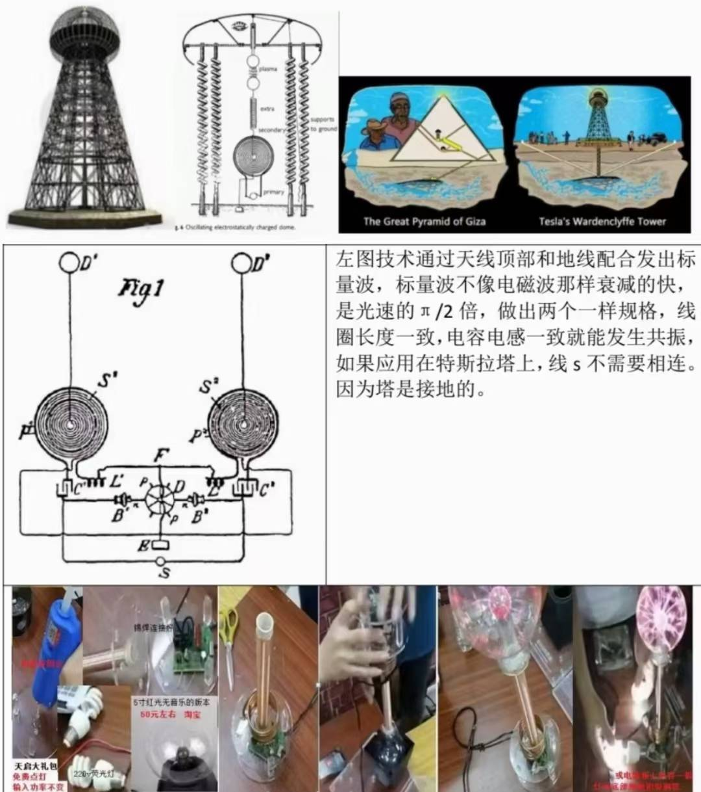
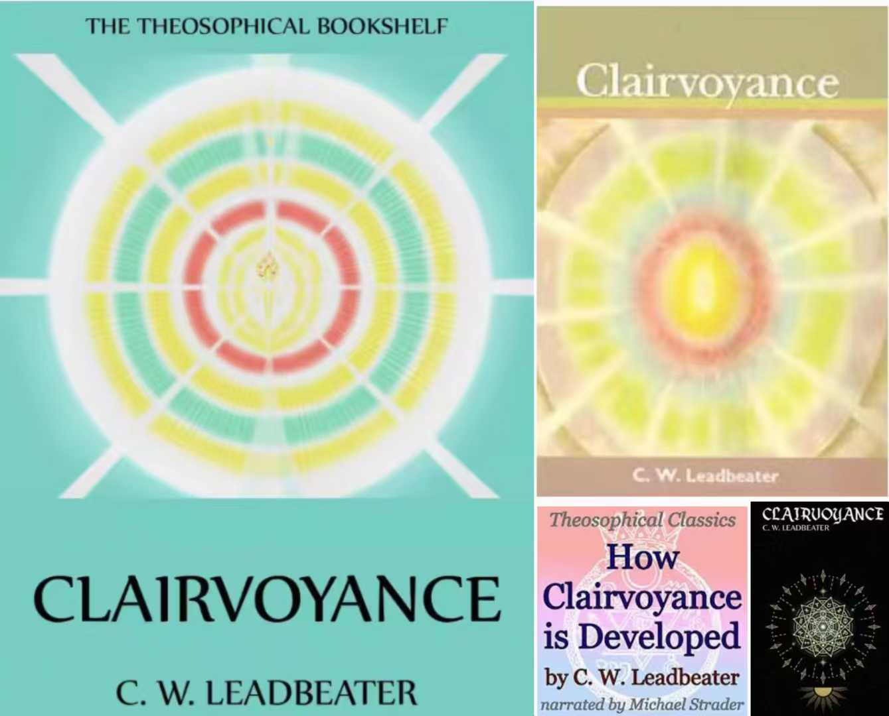
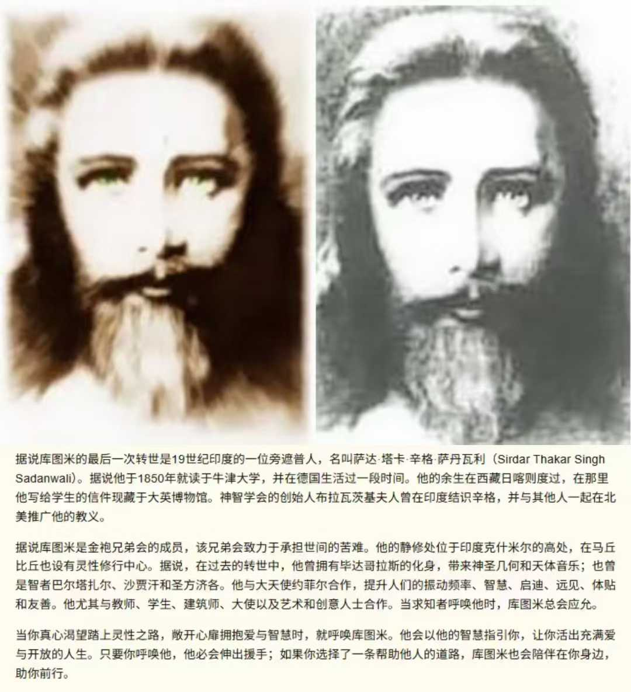
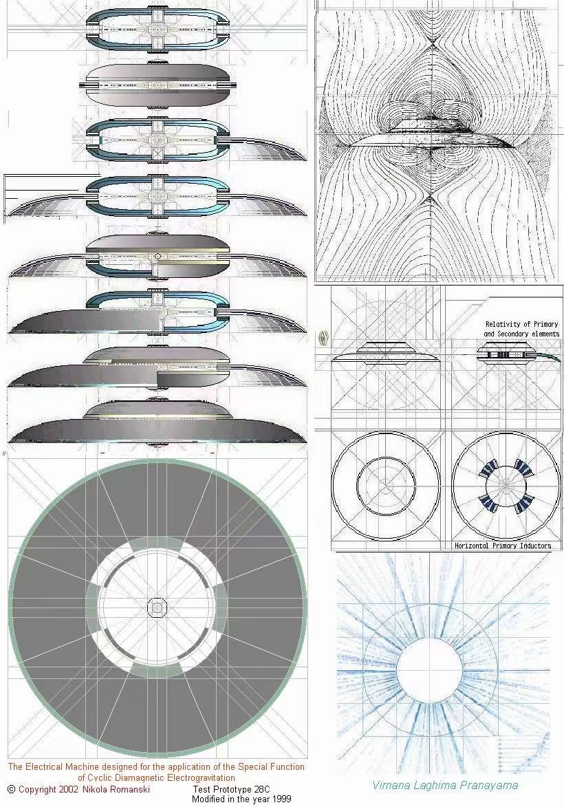
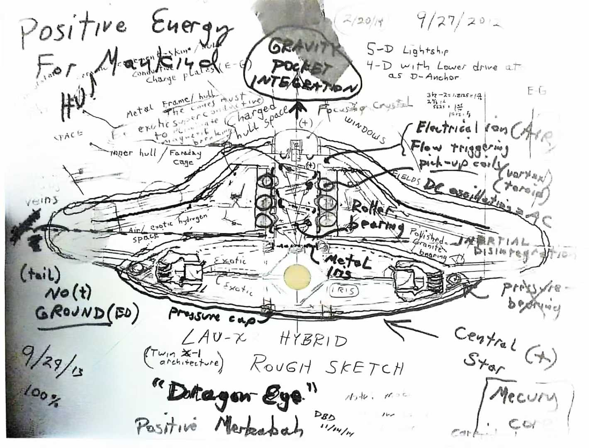
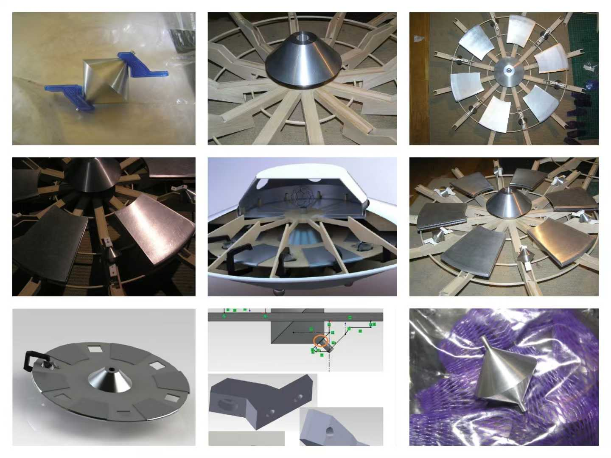

制作总纲 · 内核与母题
《迈向星际文明》——向天才工程师前辈致以最崇高的敬意
AI 分镜剧本 · 制作总纲
| 项 | 定案 |
|---|---|
| 片名 | 迈向星际文明 |
| 副标题 | 向天才工程师前辈致以最崇高的敬意 |
| 类型 | 半纪实 · 半科幻 AI 生成影像诗（前 5.5 幕伪纪录片质感，C-11 翻页后进入未来时态） |
| 总时长 | 1008 秒（约 16.8 分钟），全片 215 镜（按各幕镜长实测合计；插入镜以字母后缀标记、删除镜编号留空，均不重编其余镜号） |
| 画面基调 | 双时态：纪实层低饱和写实、胶片颗粒（历史 4:3 / 当代 16:9）；科幻层深蓝金体积光（16:9，星门段 2.39:1），每帧带纪元标记——详见「规则 C」 |
| 一句话内核 | 人类靠爆炸活了两百年，而这几个人一直在教我们用内爆活下去 |
| 对位规则句 | 燃烧即衰败，共振即生长（对应 Candy 的「坏人会爆炸，好人没事」） |
| 序章题辞（七绝 · 押先韵） | 混沌初开第一旋，一环蛋影纳诸天。当时纵使人不识，星河他日拜诸贤。 |
| 定性免责（小字 · 题辞后） | 所纪多未见于正史，所论未定于公论——本片不作事实断言，只记其方向。 |
一、双视觉规则（全片铁律，AI 提示词必须遵守）
规则 A · 冷热二分——观众不懂物理也能 30 秒读懂立场：
| 技术类别 | 画面一律伴随 | 提示词锚点词 |
|---|---|---|
| 燃烧 / 爆炸 / 离心类 | 高温、噪音、灰烬、锈蚀、焦土、暮色 | 火光, 浓烟, 铁锈, 灰烬纷飞, 低沉轰鸣 |
| 共振 / 向心 / 内爆类 | 清凉、生长、寂静、上升、晨光 | 清晨薄雾, 水汽, 柔光上升, 静谧, 晶莹 |
规则 B · 场视图揭示（全片视觉论点，用满 6 次）——每一件「能工作」的装置都走同一个三步：现实物体 → 切场视图（半透明体积光）→ 收敛成 ANU 同一形状。
场视图提示词锚定串（复制用）：
蛋形光环内嵌三层互垂螺旋弹簧结构，蓝色体积光粒子流，深色虚空背景，半透明全息质感，缓慢自转
6 个落点（纪实层 · 训练）：特斯拉线圈电弧（第一幕）、Keely 音叉水面驻波（第二幕）、Schauberger 涡旋（第四幕）、Searl 同心磁环（第四幕）、铜犁活水搅拌漩涡（第五幕）、铜球滚动轨迹（第六幕 C-10）。
第 7 次（科幻层 · 兑现）：C-11e——铜球瞬移时空间被拧动，蛋形涟漪浮起。前六次训练观众「认出 ANU」，第七次它真的动了：六次是认形状，第七次是看它工作。
规则 C · 双时态分层（半纪实 / 半科幻）——前 5.5 幕是纪实层，C-11 第二拍翻页进入未来：
| 层 | 范围 | 画幅·色调 | 运镜 | 时态签名（必须执行） |
|---|---|---|---|---|
| 纪实层 | 序章 ~ 第六幕段2（C-14 止） | 4:3（历史）/ 16:9（当代）；低饱和冷灰、胶片颗粒、实景光源 | 手持微晃 | 无签名（画面即证据） |
| 科幻层 | 第六幕段3 起（C-11 第二拍渗光）→ 第七幕 → 终章 | 16:9（星门段可上 2.39:1 宽银幕）；深蓝金、体积光、洁净高光 | 稳定缓推 / 环绕，禁止手持 | 每帧画面角落一枚极小的纪元标记 ＋ 蓝金微光自画面边缘渗入 |
科幻层三条伦理（守住「半纪实」的可信度）：
1. 同一实物连续——科幻层必须复用纪实层的实物：同一颗 Ø80 铜球、同一张花岗石平板、同一条划痕、谐波记录仪的后代。观众要认得出「这就是刚才那颗球」，未来才不是另一部片。
2. 纪元签名不可省——每帧必须带签名，让观众随时知道这是未来时态，而不是宣称当代已实现。
3. 不得跨层剪辑——科幻层镜头不得剪进纪实层；纪实层的冷句字幕不得配科幻层画面（C-11f 除外，它是两层之间的过渡卡）。
二、贯穿母题：ANU（形状 + 生成规则）
| 项 | 定案 |
|---|---|
| 母题形状 | Leadbeater《Occult Chemistry》Anu：蛋形环形场 + 1680 匝内卷螺旋，三阶 spirillae，每阶缠绕平面与上一阶垂直（递归乘以 i） |
| 历史段落版参考图 | 1908 图版风格：手绘线稿、米黄纸底、褐色墨线 |
| 星门/终章版参考图 | 体积光版：蓝金双色光粒子蛋形螺旋 |
| 渲染铁律 | 只画三层递归（十条 spirillae → 每条的线圈 → 线圈的匝），镜头持续向内俯冲暗示无限；1680 只用字幕打出，绝不画满 |
| 1680 的台词依据 | 1680 = 2^4 × 3 × 5 × 7，40 个约数，高度合成数——「为什么是一千六百八十？因为它能一直被分下去」 |
| 复算口径（OC） | 10 条 spirillae × 1,680 匝 = 16,800 Anu（来源：氢内爆汽车库 Occult Chemistry 复算；「10×7=70」是常见误读——「7」是每条线内部的细分阶数，不是乘数） |
90° 摄影机法则：每次「向下一阶递归」的剪辑，摄影机严格旋转 90°。递归三层 = 三段各转 90°，最后回到初始朝向（对应 i^4 = 1 的四重闭合）。
数学常数以结构常数身份出现：i（旋转 90°，递归算子）、i⁴=1（闭合）、四元数基 {1,i,j,k} 对应 SEG 四绕组（给专门镜头）、π（缠绕闭合）、e（对数螺旋 r=a·e^(bθ)，Schauberger 涡旋）、φ（黄金角 137.5° 排布）、√2（半转自相似）。


⚠️ 红线：任何台词/画面不得出现「用 φ 算出光速」式民间算术——常数只出现在几何、比例、递归规则里。SEG 定性为振荡器而非发电机：「它不是发电机，是一台振荡器。它不制造能量，它只是找到了一个能一直被驱动的频率。」（相移振荡器拓扑：四段 90° = 360°，环路相位归零）
内爆的工作定义（Implosion，全片物理观总纲）

内爆 = 环形内卷 + 梯度建立。 一种环形的、向内卷入的运动：能量（或水、气流、磁场）沿环形路径向内卷绕，在卷入过程中建立空间梯度差（压力差 / 密度差 / 频率差），而梯度差又驱动后续运动继续自持。
爆炸（explosion） 内爆（implosion） 运动形态 直线向外扩散 环形向内卷绕 梯度 梯度瞬间耗散，一次性 梯度持续建立，自持 时间性 燃烧即衰败 共振即生长 ANU 就是这条定义的几何学本身：蛋形环形场 + 1680 匝内卷螺旋——「环形」给出路径，「内卷」给出方向，「三层递归互垂」给出梯度持续重建的机制。片中每个人造物（线圈电弧、水面驻波、水涡旋、磁环、搅拌漩涡、铜球滚动）在「场视图」里被看见为 ANU，即被看见为一次内爆。
ANU 的贯通契机（修订）：ANU 不只是复现母题，是全片叙事逻辑轴——六次场视图揭示共用同一个判词：「这不是图案，这是一个正在进行中的内爆」；第七次（C-11e）不再揭示，而是兑现——空间真的被拧动了一下。序章到终章，观众被训练得越来越快地认出它：第一幕要 4 秒，终章只需 1 秒。
内爆的当代物理注脚（氢内爆汽车资料库复算口径）
「内爆」不是玄学词，它有一条可复算的机制链（来源：
D:\AAA我的文件\未来氢内爆汽车，全库 35 个复算脚本口径）：点燃氢氧混合气必先「外爆」——压强冲到约 6.9 bar；随后水蒸气冷凝，体积收缩约 1,860 倍，才出现「内爆负压」，其上限 −0.969 atm——内外最大压差就是 1 个大气压，不可能吸得更强。
所以本片的「内爆」不神化：它可以是爆炸的第二幕——梯度先被建立，再被向心运动收割。这正是「燃烧即衰败，共振即生长」的物理版本：同一团能量，方向相反的两步。
当代回声：零柴油氢内燃机已量产（JCB 448 ABH2，350 bar 氢罐，排气管只排水）；「装车前必须洗净引擎」真实成立（机油自燃 217℃ ≪ 氢 585℃，残留物会抢先自燃）。第七幕插段 G-19~G-21 使用此口径。
内爆的力学地基：孤子 ⇄ 涡流 ⇄ 内爆
「内爆 = 环形内卷 + 梯度建立」听起来像修辞。它其实是一条有教科书、有实测、有诺奖、有 Nature 论文的力学链——拆开是三个全部成立于主流物理的对象：
层 定义 它在片中回答什么 几何 内爆 = 环形内卷 + 梯度建立 往哪走（向心） 运动学 孤子（soliton）= 自持波包：常速、永久形式、局域，碰撞后除相移外完好 被卷进去的是什么（一团不散的波，不是被抛出的质量） 动力学 亥姆霍兹涡定理（1858）：涡管强度沿程不变；涡线不能在流体中终止，只能延伸至边界或自成闭合环；初始无旋保持无旋 为什么必须是环形（闭合环是涡线唯一被允许的归宿） 一句话主链：内爆给出方向，涡定理给出形状，孤子给出携带物。 三者合起来才是「吸着走」三个字的完整力学含义。
与 ANU 的咬合（本片最重要的一条力学接线）：
| ANU 的构成 | 对应力学对象 | 档 |
|---|---|---|
| 蛋形环形场 | 涡线不能终止 → 闭合涡环（Helmholtz 定理二） | ✅ |
| 内卷螺旋（1680 匝） | 涡量守恒 + 涡管拉伸：截面越小、旋得越紧 | ✅（无粘条件） |
| 梯度持续重建 | 涡管拉伸 + 伯努利（流速升、静压降）→ 压力梯度反过来维持向心卷绕 | ✅ |
| 三层 spirillae 互垂 | 涡管跨尺度自相似嵌套（级联是真机制；「三层互垂」是 1908 图版规定，非力学推论） | 🟡 |
⚠️ 边界：ANU 是 1908 年图版，不是流体力学解。本片只主张一件事——它所画的形状，与涡定理允许的唯一闭合形态同类。这是「形状的呼应」，不是「ANU 被物理解释了」。
零件全真、整机未证（本片对内爆的统一口径）：
| 零件 | 支撑 | 档 |
|---|---|---|
| 孤子是真实流体中的大尺度现象 | 1834 Russell → 1895 KdV → 1965 soliton → 2016 110 m 水槽复现；南海内孤立波振幅 >150 m 实测 | ✅★ |
| 涡线必闭合、涡管拉伸、伯努利 | 亥姆霍兹 1858 / Kelvin 1867 / 教科书 | ✅ |
| 涡旋能分离能量（冷热） | Ranque–Hilsch 涡流管：同管分出 +200 ℃ 与 −50 ℃（能量分离器，不是放大器） | ✅★ |
| 涡旋摩擦起电至放电 | 尘卷风实测 ≤160 kV/m；毅力号火星尘卷风放电录音（*Nature* 2025） | ✅★ |
| 内爆 → 等离子 + 光 | 声致发光：单泡内爆成等离子体，15,000–20,000 K（*Nature* 2005） | ✅★ |
| 向内压缩是核聚变级能量路径 | NIF 2022-12-05 点火：2.05 → 3.15 MJ，官方用词即「implosion physics」 | ✅★ |
| 开放系统可自组织 | 普里高津耗散结构（1977 诺奖） | ✅★ |
| 惯性可被周围物质拖曳（马赫） | 参考系拖曳实测：GP-B −37.2±7.2 mas/yr；LAGEOS 10%；双脉冲星 1.7″/yr | ✅★（现象级） |
| 「内爆流体自发产生孤子并以此产生力」 | 无主流理论或实验 | ⬜ |
| 「Repulsine 靠上述机制自持升空」 | 无任何独立实验数据 | ⬜ |
★ 本片对内爆的最终态度：每一件零件都是真的、且都是主流正典；把它们装成「内爆即升力」这台整机的那一步，至今无人独立走通。与 Keely、Searl 两幕同一口径——展示效应、标注未决、不下判决。全文详本见
09_内爆力学笺_孤子涡流与内爆.md（含时间码引文与参考文献，不进正片，只作第四幕力学注脚与宣发解释库）。
二·补、跨幕同构：两颗球（Keely 的球 → Bashar 的球）
全片最重要的一条跨幕结构呼应：第二幕与第六幕演的是同一场实验的两次表述——用声音激励一个金属球，读取球上出现的非接触响应。一个是 19 世纪的戏剧化版本，一个是当代的可检验版本。
| 维度 | 第二幕 · Keely（1872–1886） | 第六幕 · Bashar（当代可检验版） |
|---|---|---|
| 激励源 | 小提琴弓 → 钢制音叉（K-10） | 振荡器线圈（C-07） |
| 换能 / 耦合层 | 银:金:铂 = 3:6:9 三层导线（K-22/23）——声阻抗匹配阶梯 | Ø80 mm × 0.8 mm 无氧铜 TU1 空心球（C-02）——晶格完整度决定声子散射 |
| 被激励物 | 杠杆上的铁块与 550 磅炮弹（K-12/K-14） | Ø80 mm 空心紫铜球（C-02） |
| 响应方向 | 垂直：重量被抵消 → 升力 | 水平：位置被改写 → 位移 |
| 被调制的属性 | 引力质量 m_g | 位置（C-16 字幕「位置是物体的一个属性」） |
| 读数方式 | 黑板 psi + 25 名见证者目击（K-13/K-15）；谐波记录仪画出的曲线（K-39） | A/B 频谱纸带差（C-04/C-06）+ X-Y 李萨如（C-07b）+ 八点阵列 |
| 时代结论 | 三吨铁球 →「未决」（K-29） | 预注册四级判据 →「未决」；未来由 C-11a~f 兑现（C-11「暂时。」） |
一句话接线：同一个实验——19 世纪测的是垂直分量（升力），21 世纪测的是水平分量（位移）。 合起来是本片的核心主张：质量与位置都不是固定属性，而是可以被频率调制的变量。
3:6:9 的现代读法（正片口径，遵守 08 手册红线 5）：银 / 金 / 铂三层导线不按数字神秘学讲，按三层声阻抗匹配阶梯讲——不同密度与声速的金属串联，把音叉振动逐级耦合进目标球体，而不在界面处反射。它的现代等价物分列两端：Putney 共振器要 β-Ti₃Au / Mg₅₇Zn₂Al₁ 准晶（无阻抗声子传输），Bashar 实验要无氧铜 TU1（纯度换低散射）。同一条要求：给振动一条不散射的通道。
读数器：谐波记录仪（Harmonograph）——两颗球的第三件同构物
两颗球是「同一场实验的两次表述」，而真正把两幕缝在一起的是同一种读数方式：把两路频率相近的振动分别接到直角坐标的两个轴上，让它们在纸上合成一条曲线。19 世纪的仪器叫谐波记录仪（Harmonograph：Blackburn 1844；Lissajous 1857 的光学法），也是电子时代之前唯一能「看见」频率比的机械式频谱分析仪；当代实验室里的等价物叫 X-Y 记录 / 李萨如显示 / 双通道锁定放大。一颗球负责被激励，一条曲线负责说出差在哪里。
| 维度 | 第二幕 · Keely | 第六幕 · Bashar |
|---|---|---|
| 读数器 | 谐波记录仪——木制双摆牵描笔，在纸上合成闭合曲线 | X-Y 李萨如 / 双通道锁定放大——同一条数学的后代 |
| 两轴接入 | 音叉（参考振动）× 装置（响应振动） | 驱动参考（线圈）× 球体拾振（加速度计 / 激光测振） |
| 读出内容 | 频率比（瓣数）、相位差（开合角）、阻尼（包络收缩） | 同上，且可长时间积分、数字化 |
| 一句话 | 让它画出来 | 让它画出来并算出来 |
它凭什么把「波形图的差别」看出来——四条机制（正片只允许用第 ① 条做字幕）：
| 机制 | 原理 | 量级 |
|---|---|---|
| ① 频差 → 转速（时间放大） | 两轴频率几乎相同时曲线近乎闭合；存在 Δf 时整条曲线以 Δf 的速率缓慢转动。肉眼对「运动」的分辨力远高于对「幅度」的分辨力——0.02 Hz 的差被放大成 50 秒转一圈的可见转动 | 分辨力 Δf ≈ 1/T：录 10 分钟 → 1.7 mHz。这是用时间换分辨力，不是凭空放大 |
| ② 相位 → 图形开合（Q 倍锐化） | 共振点上幅度是极值，对频率偏差一阶不敏感（斜率为零）；相位却以约 2Q/ω₀ 的斜率线性变化。把驱动与拾振接成 X-Y，图形开合角直接读相位 → 频率鉴别力被品质因数 Q 放大 | 球壳 Q 估算量级 10²–10³ → 相位判据比幅度判据锐 2–3 个数量级 |
| ③ 长记录（相干累积） | 曲线画上几分钟，随机噪声按 √N 互抵，相干信号逐点累加 | 可检出的差值落到单次测量的噪声地板之下 |
| ④ 闭合判据（离散读数） | 简单整数比 → 曲线闭合；失谐 → 不闭合、慢慢转。「闭合 / 不闭合」是离散读数，比读连续幅度稳 | 对应 3:6:9 的 1:2:3 与 1680 的高度合成性——能被整除的比例才会闭合 |
⚠️ 诚实边界（并入 08 手册红线 10）：谐波记录仪是读数器，不是能量装置——它不放大信号能量，只把「频率差」翻译成「可见的运动与几何」，分辨力上限仍由记录时长决定（机制①）。正片只允许出现「让它画出来」这一层，禁止把它说成「检测异常能量的仪器」。
两球一致性（必须执行）：
- 镜头语言：两球共用一套语汇——球面倒映房间的近距离特写 → 敲击 → 频谱/纸带 → 升格位移（K-10/K-14 ↔ C-03/C-08）。
- 声音采样：两球的敲击音与滚动音必须同源（08 手册声音设计表：音叉泛音 K-10 → 线圈驱动声 C-07；铜球敲击 C-02 → 扫描舱提示音 G-01）。
- 读数器同构：纸上的曲线（K-39）↔ 屏上的曲线（C-07b）——同一套李萨如数学，只是纸换成了屏幕。
- 视觉种子：第二幕 K-34 回响里的现代声悬浮小钢珠是第一个种子（背景处掠过花岗石长桌与铜球），第六幕 C-02 完成闭合。
⚠️ 诚实边界（对应 08 手册第五节）：这条接线是母题呼应，不是物理断言。两案的史实一律按「未决」表述：Keely 的升力主张至今既没有独立复现，也没有被证伪；1998 年拆机所见的三吨铁球，其作用同样未有定论；Bashar 协议尚无独立复现。任何一帧都不得宣称反引力或瞬移已成立，更不得出现质疑方的判词与镜头（质疑方的判词一律不进正片，争议史实只存 08 制作手册备查）。
三、听觉母题（四件套，跨时代复现）
| 声音 | 首发 | 复现点 |
|---|---|---|
| 音叉泛音（Keely） | 第二幕 | 第五幕搅拌、终章调息 |
| 水声涡旋（Schauberger） | 第四幕 | 序章尾、终章溪流 |
| 磁环嗡鸣（Searl） | 第四幕 | 第六幕星门低鸣 |
| 铜球敲击（Bashar） | 第六幕 | 第七幕扫描舱提示音 |
黑场转场全部用螺旋 match cut（前镜末尾运动轨迹 → 后镜首帧同构螺旋）。
四、止损点（防止滑向「成就点名册」）
第二幕的三吨压缩空气球 = 全片止损点。 每当叙事向「人类又前进了一步」飘，就切回铁球的一个新角度（锈迹、螺栓、贴地阴影）。第七幕与终章各回一次。注意：止损点回切的含义是「未决」而不是「失败」——判决书写得比实验快，是这个时代对他们所有人做过的事，本片不给第二次。迈向星际文明不是顺利的行军，是踩着悬而未决的问题走过去。
四·补、语言体例：题辞、幕引与诗赞（中华文脉规则）
全片是一部「影像诗」，汉语本身必须承担韵味。三层体例，各司其职，不得混用：
| 层 | 位置 | 体式 | 作用 |
|---|---|---|---|
| 一、题辞 | 序章 | 七绝（押先韵） | 全片题眼：把「他们不是假如，他们就是方向」立成定论 |
| 二、幕引 | 每幕首帧 | 回目对句（七言两句对仗） | 章回体回目：一眼知本幕之魂；八幕八副，可独立成篇 |
| 三、诗赞 | 片尾 | 七律（押东韵） | 收束全片，以「星河他日拜诸公」作结 |
| 正片字幕 | 各镜 | 白话短句（现状不变） | 纪录片骨架：事实、数字、原话——不诗化，保持冷峻 |
铁律：
- 诗体只出现在题辞 / 幕引 / 诗赞三处；正片纪实字幕严禁诗化，否则纪录片质感崩——冷句与诗句的反差本身就是节奏。
- 诗句一律七言，不写四言、五言、杂言；押韵从严（题辞押「先」，诗赞押「东」）。
- 幕引写「事」不写「评」——评价留给观众。
八幕题引总表
| 幕 | 题引 | 释义落点 |
|---|---|---|
| 序章 | 混沌初开第一旋，一环蛋影纳诸天。当时纵使人不识，星河他日拜诸贤。 | 七绝题辞 · 全片定论 |
| 第一幕 | 铁塔未成天已近，电光所至夜皆明 | 塔未竟而功已成，电光所及即其碑 |
| 第二幕 | 一弦可动千钧铁，满纸犹存未解声 | 550 磅炮弹 ×「笔记没人拆」 |
| 第三幕 | 静里观心心即象，毫端落纸纸生光 | 念头有形状，落笔成图 |
| 第四幕 | 水作旋纹鱼作师，磁成环阵铁成雷 | A 线鳟鱼溪流 × B 线 SEG 磁环 |
| 第五幕 | 犁过不翻方惜土，水旋成涡始生泉 | 铜犁内卷两次、不翻生土 × 蛋形活水机 |
| 第六幕 | 球不曾瞬唯徐滚，位非固定只频移 | 铜球滚三英尺 · 位置是属性 |
| 第七幕 | 场起无形能造物，门开异地可还家 | 人工场造物 × 星门还家 |
| 终章 | 身中自有真种子，一息回旋便是仙 | 修仙＝有意识操作自己的场 |
| 片尾 | 环中一卷启鸿蒙，蛋里山河万象通。弦上犹存当日谱，磁间曾起未名风。未成塔影天先近，不翻垄土岁长丰。莫道今人无识者，星河他日拜诸公。 | 七律诗赞 · 押东韵收束 |
为什么用回目体：章回小说的回目是汉语最凝练的「一句话梗概」——两句对仗、平仄相谐、记事而不评事。它让八幕立刻获得中国叙事的时间感与庄重感，也让每一幕在分镜之外多出一个可独立传播的句子（海报、预告、单幕封面皆可用）。
五、幕结构与时长总表
| 幕 | 内容 | 时长 | 镜数 | 情感任务 |
|---|---|---|---|---|
| 序章 | 七绝题辞 + 定性免责小字 | 10s | 2 | 立论：他们不是假如，他们就是方向 |
| 第一幕 | 特斯拉：电，以及他没说完的话 | 72s | 17 | 悬念开场，未完成的伸手 |
| 第二幕 | Keely：听见以太的人 ★情感锚点 | 180s | 39 | 「证据还在，数学没人接住」 |
| 第三幕 | Leadbeater：以太的形状 | 66s | 14 | 埋「念头有形状」伏笔 |
| 第四幕 | Schauberger + Searl：向内的力量 ★双线交织·正名（含涡流三定理插段 S-06a~c） | 198s | 42 | 道德轴心：他选了土壤 |
| 第五幕 | Schauberger 的犁：让它落到土里 ★情感中点（+四产业回声） | 141s | 30 | 第一次全部向下；产业顺序=农业先行 |
| 第六幕 | Bashar：位置是一个属性（+ 未来档案：同球瞬移） | 163s | 33 | 神来之笔：球滚过去了 → 时态翻页，它终将不必滚 |
| 第七幕 | 场（果壳星球/人工场扫描+氢内爆回声） | 90s | 21 | 技术兑现，只展示不解释 |
| 终章 | 人人修仙 + 七律诗赞 | 88s | 17 | 修仙=有意识操作自己的场；以诗赞收束 |
| 合计 | 1008s + 片尾字幕 | 215 镜 |
六、分镜表格式约定（各幕文件统一）
- 表格列：镜号 / 时长 / 景别·运镜 / 画面内容 / 声音
- 表格下方按镜号给「即梦提示词」代码块，写法为摄影指导现场笔记，可直接投喂
- 所有提示词默认后缀（不再重复写）：
电影感, 低饱和写实, 胶片颗粒, 细节丰富, 4K - 转场缩写：MC=螺旋 match cut，黑=黑场，切=直切
- 插入镜规则：追加/补拍的镜次用字母后缀编号（如 K-39、C-07b），不重编其后镜号；插入镜照常计入镜数与时长的实测合计
- 删除镜规则：整镜删除时编号留空存档（如 S-34/35/39），不重编其余镜号——让制作组一眼看出「这里删过什么」
七、文件清单
| 文件 | 内容 |
|---|---|
| 00_制作总纲（本文件） | 内核 / 母题 / 规则 / 幕表 |
| 01_分镜_序章与第一幕_特斯拉.md | 82 秒试拍包（序章七绝题辞 + 第一幕，含火球插段 T-13~T-17） |
| 02_分镜_第二幕_Keely.md | ★情感锚点，全片样板幕 |
| 03_分镜_第三幕_Leadbeater.md | anu 与念头有形状 |
| 04_分镜_第四幕_Schauberger与Searl.md | ★双线交织 + 涡流三定理插段（S-06a~c） |
| 05_分镜_第五幕_生机农业.md | 搅拌漩涡 + 生活蒙太奇 + 四产业回声插段（B-25~28） |
| 06_分镜_第六幕_Bashar铜球与星门.md | 铜球实验 + 时态翻页 + 未来档案（C-11a~f） |
| 07_分镜_第七幕与终章.md | 人工场兑现 + 人人修仙 + 片尾七律诗赞（F-17） |
| 08_制作手册_成本路线与一致性.md | 三步走 / LoRA / 声音设计 |
| 09_内爆力学笺_孤子涡流与内爆.md | 力学地基：孤子 / 涡流力学 / 内爆实证链（不进正片，注脚与解释库） |
诗笺 · 全片诗体汇览
全片诗体只允许出现在三处：序章题辞、八幕幕引、片尾诗赞——共 10 首。正片纪实字幕严禁诗化：冷句与诗句的反差，就是本片的节奏。
序章 + 第一幕 · 特斯拉
01 分镜 · 序章 + 第一幕「电，以及他没说完的话」（特斯拉）
试拍包：本文件 82 秒（序章 10s + 第一幕 50s + 火球插段 22s）为全片第一步试拍内容，验证螺旋 match cut 与低饱和调性。
火球插段素材源：teslauniverse《Fireball Production from a Tesla Coil》（Corum & Corum, Electric Spacecraft Journal）——1897 专利构型、双频相互作用、碳颗粒催化、玻璃窗逐帧揭穿。
序章 · 七绝题辞（10 秒，2 镜）
立论方式（老师定调）：不说「假如」。他们不是待验证的假设，他们是打开星际文明的第一批种子——当代人不懂，后世自会懂。题辞用七绝（押先韵），是全片的定论句，不是疑问句。
一环蛋影纳诸天。
当时纵使人不识，
星河他日拜诸贤。
| 镜号 | 时长 | 景别·运镜 | 画面内容 | 声音 |
|---|---|---|---|---|
| P-01 | 6s | 全黑画面，白字逐句浮现 | 七绝前两句逐句浮出：「混沌初开第一旋，」「一环蛋影纳诸天。」每句浮现时，画面极暗处同步掠过一丝螺旋微光（ANU 母题预埋） | 静默，仅极低频房间底噪 |
| P-02 | 4s | 字幕淡出，黑场 | 后两句浮出：「当时纵使人不识，」「星河他日拜诸贤。」末句定格；其下一行小字：所纪多未见于正史，所论未定于公论——本片不作事实断言，只记其方向。随后片名浮现：迈向星际文明 | 一声极轻的音叉泛音起（母题首发预埋） |
提示词：
P-01: 纯黑背景, 白色衬线字幕逐句渐显, 每句浮现时暗处掠过极淡螺旋微光, 极简, 无其他元素 P-02: 纯黑背景, 后两句七言渐显并定格, 下方一行小字免责说明, 片名字幕与金色细线副标题浮现, 微光后淡出
第一幕 · 特斯拉（50 秒，12 镜）



叙事任务：悬念开场——他知道的比公布的多。结尾停在「未完成的伸手」。
| 镜号 | 时长 | 景别·运镜 | 画面内容 | 声音 |
|---|---|---|---|---|
| T-01 | 4s | 特写·固定 | 1890s 科罗拉多夜间实验室，钨丝灯泡悬空亮起，无任何导线，桌面落满灰 | 电流嘶嘶声 |
| T-02 | 4s | 中景·缓推 | 特斯拉立于暗室中央，白衬衫黑西装，四周电弧如光蛇缠绕 | 电弧噼啪 |
| T-03 | 3s | 特写 | 线圈顶端电弧呈螺旋攀升——母题首秀 | 嗡鸣 |
| T-04 | 4s | 场视图（规则B①） | 画面转半透明体积光：电弧收敛成蛋形光环+三层互垂螺旋（ANU 锚定串） | 嗡鸣化为纯净泛音 |
| T-05 | 3s | 回现实·切 | 俯拍：旋转磁场图纸，黄铜仪器，手摇转盘 | 机械摩擦声 |
| T-06 | 4s | 特写·慢镜 | 转盘旋转，二相同步电机模型转动，90° 夹角线圈依次点亮（90° 法则视觉首秀） | 四拍节奏嗡鸣 |
| T-07 | 4s | 全景·拉远 | 沃登克里弗塔剪影，草原暮色，塔顶电晕发光 | 风声+低鸣 |
| T-08 | 4s | 空镜 | 远处小镇零星灯泡亮起（无线输电愿景），随后逐盏熄灭 | 静默下滑 |
| T-09 | 4s | 中景 | 老年特斯拉独坐旅馆房间，喂白鸽，窗外曼哈顿夜色 | 鸽子扑翅 |
| T-10 | 3s | 特写 | 纸上未完成的手稿：波形图与「以太」字样，笔迹戛然而止 | 纸页声 |
| T-11 | 5s | 特写·缓推 | 他的手缓缓抬起，伸向虚空——像要够什么，指尖微光 | 音叉泛音渐起 |
| T-12 | 8s | 黑场转场（MC） | 手指将触未触瞬间画面凝止→指尖光点拉出螺旋轨迹→螺旋旋转收束进黑暗 | 泛音悬停，接幕2煤油灯声 |
提示词：
T-01: 1890年代昏暗实验室, 悬空发光的白炽灯泡, 无电线, 桌面灰尘, 冷色调薄雾, 4:3画幅 T-02: 塞尔维亚裔发明家中年男子立在暗室中央, 白衬衫黑西装, 背影挺拔, 周身蓝白电弧缠绕, 面部半明半暗 T-03: 特斯拉线圈顶端电弧呈螺旋形攀升, 长曝光质感, 蓝紫色电光, 暗背景 T-04: 蛋形光环内嵌三层互垂螺旋弹簧结构, 蓝色体积光粒子流, 深色虚空背景, 半透明全息质感, 缓慢自转 T-05: 俯拍黄铜仪器与旋转磁场图纸, 手摇转盘, 1890年代工坊, 暖黄煤油灯补光 T-06: 二相电机模型转动, 四个90度夹角线圈依次点亮发光, 黄铜质感, 暗室 T-07: 沃登克里弗塔剪影, 草原暮色, 塔顶电晕辉光, 低饱和, 大远景 T-08: 1900年代小镇夜晚, 远处零星灯泡亮起又熄灭, 广角空镜, 静谧 T-09: 老年男子独坐旅馆房间喂白鸽, 窗外纽约夜色, 昏黄台灯, 孤独感 T-10: 泛黄手稿特写, 波形图与手写外文字, 钢笔笔迹戛然而止 T-11: 老人手掌特写缓缓抬起伸向虚空, 指尖微弱光点, 景深浅, 仰角 T-12: 指尖光点拉出螺旋轨迹, 螺旋旋转收束进黑暗, 抽象粒子特效, 黑场
第一幕插段 · 火球（22 秒，5 镜）★他没说完的话

插入位置：T-04 与 T-05 之间（场视图①收束后、旋转磁场前）——「他造出了球状闪电，但几乎没发表」是「他知道的比公布的多」的最硬证据。素材源：Corum & Corum 复现实验（teslauniverse）+ 特斯拉 Colorado Springs Notes。
史实锚点：1897 年专利构型（两支不同频率的四分之一波长螺旋共振器共地、同被初级线圈环绕）；特斯拉原话「火球来自两个频率的相互作用——一个杂散高频波叠加在主回路的低频振荡上」；Corum 复现参数（67 kHz / 2.4 MV + 156 kHz / 200 kV，火花 100 μs，相干时间 72/30 μs）；火球直径 1–3 cm、寿命 1–2 s、色演化如赫罗图（红矮→蓝白巨星→红巨熄灭）；碳颗粒催化（蜡烛烟/橡胶绝缘电缆，特斯拉本人的建议）；玻璃窗逐帧揭穿：火球并未穿过玻璃，是旧球熄灭同时新球在对侧诞生。
| 镜号 | 时长 | 景别·运镜 | 画面内容 | 声音 |
|---|---|---|---|---|
| T-13 | 5s | 全景·缓推 | 1899 科罗拉多实验室：两支高度不同的螺旋共振器共地并立，同一组初级线圈环抱二者（1897 专利构型） | 双频拍频嗡鸣（两种音高互相追赶） |
| T-14 | 5s | 特写·升格 | 流光沿低频共振器顶端射出——流光上凝出一颗 1–3 cm 火球：暗红→亮橙→蓝白，如恒星演化般变色 | 高压放电嘶鸣+一声「噗」 |
| T-15 | 4s | 大特写 | 蜡烛火苗被气流拖过电极——碳颗粒卷入，火球骤然变多变大（特斯拉当年建议用橡胶绝缘电缆的碳） | 蜡烛噼啪 |
| T-16 | 4s | 中景·逐帧 | 火球「穿过」玻璃窗飘走——逐帧回放揭穿：旧球熄灭的同一帧，新球在玻璃对侧诞生 | 逐帧快门咔嗒 |
| T-17 | 4s | 特写·俯拍 | 笔记本：双频波形叠加手绘图，火球的光在纸面上投出微光。字幕（原话直引）：「火球来自两个频率的相互作用。」 | 钢笔沙沙+拍频余韵 |
内爆定义注（对位总纲）：火球不是「爆炸物」——它是碳颗粒被环形卷入的等离子体内爆，色演化是梯度建立与耗散的可见记录。T-14 火球成形与 T-04 场视图①同构：观众第一次看到「ANU 长在现实里」。
提示词：
T-13: 1899年科罗拉多实验室全景, 两支不同高度的螺旋共振线圈共地并立, 一组初级铜线圈环绕两者, 暗色木质结构, 4:3画幅 T-14: 升格慢动作, 电弧流光末端凝出一颗小型发光火球, 暗红渐变蓝白色, 悬浮于空中, 深黑背景 T-15: 蜡烛火苗被气流拖向电极的极致特写, 碳烟颗粒卷入电弧, 火花骤增, 暖光与蓝紫电光混合 T-16: 火球贴近玻璃窗的逐帧摄影回放画面, 窗一侧旧光球熄灭与另一侧新光球诞生同帧呈现, 冷光 T-17: 俯拍泛黄笔记本, 手绘双频正弦波形叠加图, 纸面微光映照, 钢笔搁在页边, 暖黄台灯
第二幕 · Keely（★全片样板幕）
02 分镜 · 第二幕「听见以太的人」（Keely）★全片情感锚点
时长 180 秒 / 39 镜（含插入镜 K-39，以字母后缀计数，不重编其后镜号）。素材源：1886-05-22《纽约时报》现场报道（25 名见证者）、Dale Pond《Keely's Laws of Being》、SVP（Sympathetic Vibratory Physics）档案库——Dale Pond 建立的 SVP 网站至今保存并研究 Keely 的技术文献、笔记与实验记录，主流叙事只讲了故事的一半。
本幕立场（老师定调）：为工程师正名——不洗白、不嘲笑、也不替任何人下判决；落在「他留下证据与数学，时代只留下未决」。质疑方的判词一律不进正片。
现代理论注脚（文末）：Fran De Aquino 引力质量控制模型 + 非线性声学驻波换能链 + Alexander Putney 双抛物面共振器——为「声波反引力」补上一条现代物理解释链（未获主流证实，按「存疑留档」支线处理，不进正片）。
本幕叙事弧
| 段 | 内容 | 镜号 | 时长 |
|---|---|---|---|
| 段1 | 1872 木匠宣布发现新力 | K-01~06 | 26s |
| 段2 | 1886 纽约时报现场演示 ★重头戏 | K-07~19 | 66s |
| 段3 | 369 与 3:6:9 金属（理论一瞥，场视图②） | K-20~25 | 32s |
| 段4 | 1898 拆机器的人 · 三吨铁球 ★止损点首发 | K-26~33 | 40s |
| 段5 | 回响：证据还在，数学没人接住 | K-34~38 | 16s |
段1 · 木匠宣布发现新力（1872，26s）
| 镜号 | 时长 | 景别·运镜 | 画面内容 | 声音 |
|---|---|---|---|---|
| K-01 | 5s | 特写·横移 | 蒸汽时代费城街景：烟囱、煤烟、锅炉喷汽，铁轨震颤，行人掩鼻 | 蒸汽嘶鸣+锤击 |
| K-02 | 4s | 中景 | 1872 年木匠工坊内，John Keely（45 岁络腮胡工匠）放下刨子，凝视桌上水杯 | 工坊环境音 |
| K-03 | 4s | 特写·慢推 | 水杯特写，一滴水悬在杯沿，逆光 | 水滴声放大 |
| K-04 | 5s | 中景·微仰 | Keely 面对几位投资者的客厅，手按黄铜装置，突然整屋烛火同频摇曳 | 音叉泛音初现 |
| K-05 | 4s | 特写 | 报纸排版镜头：约翰·基利，木匠出身的机械师，宣称发现以太力 | 排版机咔嗒 |
| K-06 | 4s | 黑场转场（MC） | 烛火摇曳的螺旋轨迹收束，切1874 报纸标题：Keely Motor Company，资本五百万美元 | 股票报价人声鼎沸 |
K-01: 1870年代费城街景, 蒸汽时代, 烟囱煤烟, 锅炉喷出蒸汽, 铁轨震颤, 行人掩鼻而过, 棕褐色调, 灰蒙蒙 K-02: 1870年代木匠工坊内, 中年络腮胡工匠放下刨子凝视桌上一杯水, 暖黄侧光, 尘埃漂浮 K-03: 一滴水悬在水杯边缘的极致特写, 逆光, 水滴内折射工坊倒影, 微距镜头 K-04: 维多利亚客厅内工匠手按黄铜装置, 一排蜡烛火焰同频摇曳, 微妙不安感, 暖光 K-05: 1870年代报纸排版车间, 铅字排版特写, 印刷机滚动, 泛黄报纸渐显标题 K-06: 蜡烛火焰摇曳轨迹化为螺旋光带旋转收束进黑暗, 抽象粒子, 黑场
段2 · 1886 纽约时报现场演示 ★重头戏（61s）

史实锚点：25 名资本家、科学家与工程师见证；装置当场从散件组装以证明无隐藏机关；550 磅炮弹 1/8 秒被推起，计算压力 18,250 psi；以太炮无后坐力、炮管常温。
| 镜号 | 时长 | 景别·运镜 | 画面内容 | 声音 |
|---|---|---|---|---|
| K-07 | 5s | 全景·缓推 | 1886 演示厅：长桌、黑板、25 名正装见证者入座，桌前堆着散落的黄铜零件 | 人声低语 |
| K-08 | 5s | 中景·环绕 | Keely 当众组装「解放器」Liberator：黄铜共鸣器、钢制音叉、铜制刻度盘，零件在他手中合拢 | 金属咬合声 |
| K-09 | 4s | 特写 | 刻度盘指针归零，黄铜管接入杠杆，管内空气被排空 | 阀门嘶声 |
| K-10 | 5s | 大特写·慢镜 | 小提琴弓缓缓拉过钢制音叉——音叉振动的高频闪烁（升格 240fps） | 琴弓摩擦→纯净泛音 |
| K-11 | 4s | 俯拍 | 音叉振动传入桌面：水盆水面绽开同心圆驻波（母题：螺旋/同心圆②） | 泛音+水声 |
| K-12 | 5s | 中景 | 杠杆上三个重物（112+56+28 磅铁块）瞬间弹起悬停半秒，见证者集体后仰 | 闷响+吸气声 |
| K-13 | 4s | 特写 | 黑板粉笔字：7,480 psi，粉笔折断 | 粉笔断裂声 |
| K-14 | 6s | 全景·仰角 | 550 磅炮弹挂上杠杆——1/8 秒内被推起（子弹时间：尘埃凝滞，铁球上升） | 巨响被抽空→低频轰鸣 |
| K-15 | 4s | 特写 | 黑板：18,250 psi；见证者中有人摘下眼镜擦拭，有人起身 | 静默+椅子声 |
| K-16 | 5s | 中景 | 以太炮：1/8 英寸黄铜管，铅弹推入，开阀——铅弹呼啸穿过铁板 | 爆响但炮身无声 |
| K-17 | 4s | 大特写 | 炮口特写：无后坐、无烟、炮管挂着常温的水珠 | 只有靶板回响 |
| K-18 | 5s | 中景·环绕 | Keely 面对沉默的见证者们，平静地拧上阀门：「还有足够的力量，再射五百颗。」 | 台词回声 |
| K-19 | 5s | 黑场转场（MC） | 铁板上的穿孔冒出青烟，烟圈旋成螺旋收束，切Keely Motor 工厂夜景 | 泛音余韵接工厂汽笛 |
K-07: 1886年演示厅全景, 长桌黑板, 25名维多利亚正装见证者入座, 桌前散落黄铜零件, 煤气灯光, 4:3画幅 K-08: 工匠双手当众组装黄铜共鸣器与钢制音叉与铜刻度盘, 零件合拢成整体, 环绕运镜, 金属光泽 K-09: 黄铜刻度盘指针归零特写, 细铜管接入杠杆装置, 阀门关闭, 工业质感 K-10: 小提琴弓缓缓拉过钢制大音叉, 音叉振动高频闪烁, 升格慢动作, 冷光 K-11: 俯拍铜盆水面绽开同心圆驻波波纹, 波纹与泛音同步, 暗色水面反光 K-12: 杠杆上三块铁块瞬间弹起悬停半秒, 周围正装人士集体后仰, 动态模糊 K-13: 黑板粉笔字写满压力数字, 粉笔尖端折断坠落, 特写 K-14: 550磅大铁球悬挂于杠杆, 升格子弹时间里铁球缓缓上升, 尘埃凝滞, 仰角全景 K-15: 维多利亚绅士摘眼镜擦拭与起身离座的特写群像, 惊愕与怀疑交织, 暖光 K-16: 细黄铜管火炮发射, 铅弹呼啸击穿铁板, 铁板破孔火花, 中景 K-17: 火炮炮口大特写, 无烟无后坐, 炮管表面挂常温水珠, 冷静的金属质感 K-18: 工匠平静拧上阀门面对沉默人群, 逆光剪影, 台词口型, 庄重 K-19: 铁板破孔冒出青烟, 烟圈旋成螺旋光带旋转收束进黑暗, 黑场
段3 · 369 与 3:6:9（理论一瞥，32s）

元宝红线遵守：369 以「周期运动的三元结构」呈现，不搞数字神秘学。
跨幕接线（第六幕回收）：银 / 金 / 铂三层导线 = 三层声阻抗匹配阶梯——它的现代等价物正是第六幕那颗「无氧铜 TU1」空心球：同一条要求，给振动一条不散射的通道。详见总纲「二·补 跨幕同构：两颗球」。
第三件同构物（读数器）：K-39 的谐波记录仪是两颗球的「眼睛」——把两路相近频率的振动接到直角坐标两轴，让频率差变成曲线的开合与转动（详见总纲「二·补 · 读数器」）。
| 镜号 | 时长 | 景别·运镜 | 画面内容 | 声音 |
|---|---|---|---|---|
| K-20 | 5s | 动画·场视图② | 水面驻波→切场视图：同心圆收敛成蛋形光环+三层互垂螺旋（ANU 锚定串） | 泛音持续 |
| K-21 | 5s | 动画·字幕 | 蛋形内三色光点标注：3（发散·离心）/ 6（支点·平衡）/ 9（汇聚·向心），字幕「任何周期运动的三个不可见分量」 | 三声泛音对应 |
| K-22 | 5s | 特写·横移 | 工坊暗格拉出三卷导线：银线、金线、铂线，在光下依次反亮 | 金属细响 |
| K-23 | 4s | 动画·字幕 | 银卷标 3，金卷标 6，铂卷标 9；三线缠绕接入装置——三层导线截面在光下叠成一段阶梯；字幕「银:金:铂 = 3:6:9 · 三层声阻抗阶梯」 | 嗡鸣三度 |
| K-24 | 6s | 动画 | 分子聚集动画：粒子相互靠近时反常地吸收环境光点（字幕「分子聚集伴随着能量的吸收——与热力学相反」） | 光点吸纳音效 |
| K-25 | 7s | 中景·缓推 | 1893 深夜书房，Keely 写下「物质是被束缚起来的能量，而能量是被释放出来的物质」，烛光映壁 | 羽毛笔沙沙 |
K-20: 蛋形光环内嵌三层互垂螺旋弹簧结构, 蓝色体积光粒子流, 深色虚空背景, 半透明全息质感, 缓慢自转 K-21: 蛋形螺旋结构内三个发光标注点, 三种颜色对应数字3与6和9, 极简全息字幕, 深空背景 K-22: 暗格抽屉里三卷金属导线依次展开, 银线金线铂线在烛光下依次反光, 质感特写, 暖色 K-23: 三卷银金铂导线缠绕接入黄铜装置的动画示意, 三层导线截面叠成阶梯状排列, 数字标签浮现, 蒸汽朋克插画风 K-24: 全息粒子动画, 微观粒子团靠近时周围环境光点被吸入粒子团, 逆常规能量动画, 深蓝背景 K-25: 1890年代深夜书房, 老工匠羽毛笔写作, 烛光映在墙面, 稿纸特写手写体, 暖黄
段4 · 1898 机器被拆开之后 ★止损点首发（40s）
| 镜号 | 时长 | 景别·运镜 | 画面内容 | 声音 |
|---|---|---|---|---|
| K-26 | 4s | 中景 | 1898 年冬，讣告报纸 + 门上封条；窗外雪落 | 风雪声 |
| K-27 | 5s | 跟拍·手电光 | 投资方工程师推开尘封工作室门，手电光束扫过落灰的装置 | 脚步回声 |
| K-28 | 5s | 特写·移焦 | 手电照见地板夹层——黄铜管路；镜头沿着铜管一路延伸，钻入地基 | 金属空响 |
| K-29 | 6s | 全景·仰角 | 地基坑内：一颗三吨的压缩空气球静静躺着，手电光打在锈壳上 | 深沉回响 |
| K-30 | 5s | 大特写 | 铁球锈壳特写，一颗水珠沿锈迹滑落（呼应 K-03 的水滴） | 水滴回声放大 |
| K-31 | 5s | 中景 | 工程师们对视、记录；窗外媒体闪光灯——报纸要结论，装置只给读数 | 快门声+议论 |
| K-32 | 4s | 字幕 | 黑底白字：「机器拆开的那天，报纸给出了结论。读数，还没读完。」 | 静默 |
| K-33 | 6s | 大特写·缓推 | 回切铁球：镜头贴近铆钉与锈纹，字幕续：「但没人拆开他的笔记——那里还有一整套没人接住的数学。」 | 低频心跳 |
K-26: 1898年冬天, 报纸讣告与封条木门, 窗外落雪, 灰蓝色调, 静物感 K-27: 第一视角手电光束推开尘封工坊门, 光束扫过落灰的黄铜装置, 尘埃在光柱中飞舞 K-28: 手电光沿地板夹层黄铜管路移动, 镜头贴地延伸至墙角深处, 惊悚感打光 K-29: 地基坑内巨大锈蚀金属球体躺在阴影中, 手电光束打亮半球, 仰角全景, 压迫感 K-30: 锈蚀铁球表面极致特写, 一滴水珠沿锈迹缓慢滑落, 微距, 冷色 K-31: 几位工程师俯身记录, 窗外镁光灯闪烁, 人群剪影, 新闻纪实感 K-32: 纯黑背景白色字幕渐显, 极简 K-33: 铁球铆钉与锈纹缓慢推进特写, 字幕浮现, 单一顶光, 博物馆文物感
段5 · 回响（21s）
| 镜号 | 时长 | 景别·运镜 | 画面内容 | 声音 |
|---|---|---|---|---|
| K-34 | 4s | 蒙太奇 | 快切：被拆散的音叉 / 空荡工坊 / 现代书房屏幕上 Dale Pond 的 SVP 数字档案库 / 现代实验室声悬浮——小钢珠稳稳停在驻波节点上（同一原理的当代缩比版）；画面深处掠过一张花岗石长桌与一颗铜球（第六幕的种子） | 泛音渐弱 |
| K-35 | 3s | 字幕 | 黑底白字：「他看见了。」 | 静默 |
| K-36 | 3s | 字幕 | 黑底白字：「证据还在。数学还没人接住。」 | 静默 |
| K-37 | 3s | 动画 | 音叉振动的水面残波最后一次凝成 ANU 蛋形微光，随后熄灭 | 最后一声泛音 |
| K-38 | 3s | 黑场转场（MC） | 微光熄灭前的螺旋轨迹 → 切 1895 年英国，一个男人的「星光视觉」 | 接幕3 |
| K-39 | 5s | 特写·缓推 | 工作台上摊着谐波记录仪画出的图纸：两只摆带动描笔，在纸上合成一条闭合的蛋形曲线；缓推，字幕「看不见的频率差，可以被画成看得见的形状」——同一张图，一百年后会画在铜球的实验室里（跨幕接线 → C-07b） | 纸笔沙沙+泛音 |
K-34: 快切蒙太奇, 拆散的钢制音叉, 空荡积灰工坊, 屏幕上的SVP数字档案库, 声悬浮小钢珠停在驻波节点, 画面深处掠过花岗石长桌与一颗铜球, 冷灰调 K-35: 纯黑背景白字渐显, 极简 K-36: 纯黑背景白字渐显, 极简 K-37: 暗色水面最后一圈涟漪凝成微小蛋形螺旋光点, 随即熄灭, 极暗背景 K-38: 螺旋光带旋转收束进黑暗后切1895年英伦书房晨光, 转场 K-39: 19世纪木制谐波记录仪在泛黄图纸上绘制李萨如曲线特写, 两只摆牵连描笔, 曲线呈闭合蛋形, 烛光暖调, 微距缓推
本幕现代理论注脚（声波反引力的现代解释链，不进正片）
来源：ima 笔记 ×5（De Aquino 理论 / 非线性驻波 / Putney 共振器 / 材料体系 / ELF 频率条件）。作用：为 K-14「550 磅炮弹被推起」的声学演示提供一条现代物理解释支线——正片不出现，供拍摄顾问与宣传物料使用。口径：非凡主张，未获主流证实；按「存疑留档」处理。
一、理论核心：Fran De Aquino 引力质量控制模型
- 主张：弱等效原理并非恒成立——引力质量 m_g 与惯性质量 m_i 通过入射辐射耦合（U=辐射能量密度，εr/μr/σ=材料电磁参数）。当 U 足够高、频率足够低时，m_g 可被降至零甚至负值——m_g ≤ 0 即反重力。De Aquino 2000 年自称完成反重力实验（Resonance Timecycle 时间线节点）。
- 频率条件：ω ≪ σ_body/ε_body——辐射频率必须远小于材料的「电导率/介电常数」特征频率。通俗类比：勺子搅糖浆，搅得够慢，整锅才整体跟着动；搅得飞快，只在表面起涟漪。→ 工程上落在 ELF 极低频段（<300 Hz）：7.83 Hz（舒曼共振）、50/60 Hz、100 Hz。
二、声学链路：怎么用声音触发
| 环节 | 内容 |
|---|---|
| 1 声驱动 | 高强度非线性声学驻波把能量「攒」到极大（共振腔基频 f0=c0/2l；谐波谱由非线性方程给出，可聚焦基频、抑制高次谐波） |
| 2 换能 | 驻波在压电/高折射率材料（石英、电气石、特殊合金）内部感应出同频 ELF 电磁振荡 |
| 3 引力修正 | 内部 ELF 电磁场满足 De Aquino 条件 → 材料的引力质量被改变 → 升力 |
三、材料体系（Putney 共振器口径）
| 材料 | 角色 |
|---|---|
| β-Ti3Au（Aurichalcum，A15 相） | 壳体：极硬 + 涡旋超导 + 量子锁定 |
| Mg57Zn2Al1 准晶超导体 | 备选壳体：无阻抗声子传输 |
| 磁性地质聚合物（玄武岩+电气石+黄铁矿+Fe/Ni/Au/Ag/Ti 微粒，350℃ 烧制） | 压电换能核心 |
| 压电石英 | 金字塔/古代共振结构的换能介质 |
四、装置形态：双抛物面「共振维曼那」
两片手碟状抛物面壳体共轴对合，公共焦点放置 1.45 Hz 次声驱动源（大金字塔特征频率）→ 球面波→平面波→球面波的完美驻波；One.pdf 记载金字塔声悬浮水与同位素分离。工艺链：壳体旋压 → β 相退火（获超导性）→ 地质聚合物核心浇筑 → 焦点调音（手碟式调音 + 激光测振）。
正片对接点：K-11 水面同心圆驻波与 K-14 升格炮弹即本链路的 19 世纪戏剧化前传；K-34 的 SVP 档案库 + 声悬浮画面即这条解释链的当代存档。
第三幕 · Leadbeater
03 分镜 · 第三幕「以太的形状」（Leadbeater）
时长 60 秒 / 14 镜。任务：埋「念头有形状」伏笔——终章回收。本幕是全片唯一放开抽象视觉的地方（Thought-Forms，1901，康定斯基与蒙德里安都受过它影响）。真实伏笔：1913 年物理学家 Aston 采用了神智学者命名的 meta-neon（一句字幕带过，不展开）。
| 镜号 | 时长 | 景别·运镜 | 画面内容 | 声音 |
|---|---|---|---|---|
| L-01 | 4s | 中景 | 1895 年夏，英伦乡间书房晨光，Leadbeater 与 Besant 对坐闭目冥想，桌面氢气管 | 晨鸟+管钟 |
| L-02 | 5s | 大特写·慢推 | 氢原子微光（主观视点）：先是一片混沌光雾 | 光雾低鸣 |
| L-03 | 6s | 动画·俯冲 | 混沌中凝出蛋形光体——ANU 首次正面登场（历史图版风格：米黄纸底褐色墨线） | 泛音+纸页声 |
| L-04 | 5s | 动画·90° 递归① | 镜头旋 90° 向内俯冲：十条 spirillae 显形 | 嗡鸣降一阶 |
| L-05 | 5s | 动画·90° 递归② | 再旋 90°：每条 spirilla 解开成更细的线圈 | 嗡鸣再降 |
| L-06 | 5s | 动画·90° 递归③ | 再旋 90°：线圈解出细匝，镜头回正朝向（i⁴=1 闭合）——字幕「1680 匝」 | 三阶泛音归一 |
| L-07 | 4s | 手绘特写 | 手绘插图：褐墨蛋形螺旋图版落笔，旁注 anu 字样 | 钢笔沙沙 |
| L-08 | 4s | 中景 | 1901 年出版机印《Thought-Forms》：情绪被画成彩色几何形——尖刺、光环、涡旋 | 印刷机节奏 |
| L-09 | 6s | 抽象蒙太奇 | 情绪形状流动彩排：愤怒=红色放射尖刺，喜悦=金色同心圆，悲伤=蓝色下沉涡旋（配乐极简） | 对应音色 |
| L-10 | 4s | 现实·冷调 | 同年代主流实验室：X 光管、示波器、白褂研究者各自埋头测量（两个世界，各说各话） | 仪器嗡响 |
| L-11 | 4s | 字幕 | 黑底白字：「1913 年，物理学家阿斯顿采用了他们命名的 meta-neon。」 | 一声轻钟 |
| L-12 | 4s | 特写 | 铅字排出一行小字 meta-neon，被印刷滚筒压过——保留进真实词典 | 印刷咔嗒 |
| L-13 | 5s | 蒙太奇 | 快切：anu 手绘图版 → 蛋形体积光版（参考图两版交接）→ 熄灭 | 泛音悬停 |
| L-14 | 5s | 黑场转场（MC） | 蛋形微光旋成螺旋 → 切阿尔卑斯山溪流急流（Schauberger 入场） | 水声起（母题③） |


L-01: 1895年英伦乡间书房, 晨光透过薄纱窗帘, 两位神智学者对坐闭目冥想, 桌上玻璃放电管, 柔和暖光 L-02: 主观视点混沌光雾缓慢涌动, 微光粒子, 深色背景, 冥想氛围 L-03: 蛋形螺旋光体在光雾中凝成, 复古手绘图版风格, 米黄纸底褐色墨线, 科学插图质感 L-04: 蛋形结构内部十条螺旋细丝显形的示意动画, 镜头旋转90度俯冲进入, 复古科学插图风 L-05: 螺旋细丝解开成更细线圈结构的示意动画, 镜头再旋转90度, 复古科学插图风 L-06: 线圈解出细密线匝的示意动画, 镜头第三旋90度回到正朝向, 字幕数字浮现, 复古科学插图风 L-07: 钢笔在米黄纸上绘制蛋形螺旋插图特写, 褐色墨线, 旁注手写字, 暖光 L-08: 1901年印刷机印出彩色几何形状插图页, 尖刺光环涡旋等情绪图形, 复古印刷质感 L-09: 抽象彩色几何动画, 红色放射尖刺与金色同心圆与蓝色下沉涡旋依次流动, 康定斯基风格 L-10: 同年代主流物理实验室, X射线管与早期示波器, 白褂研究者各自埋头测量, 冷白光, 写实 L-11: 纯黑背景白字渐显, 极简 L-12: 铅字排出外文单词被印刷滚筒压过的特写, 油墨质感, 复古印刷车间 L-13: 褐墨手绘蛋形图版渐变为蓝金体积光蛋形螺旋, 两版同构叠化, 深色背景 L-14: 蛋形微光旋成螺旋光带收束, 切阿尔卑斯山湍急溪流空镜, 转场




第四幕 · Schauberger + Searl（★双线交织）
04 分镜 · 第四幕「向内的力量」（Schauberger + Searl）★双线交织
时长 198 秒 / 42 镜。全片技术核心幕。素材源：Repulsine A/B 史实、Searl 1946 Haringey 装置史实、SEG 幻方结构（12/22/32、34g 三重共振）、外摆线统一数学框架、q=112→lcm=1680、涡流力学（亥姆霍兹三定理，见 09 力学笺）。（争议方史料另存 08 制作手册备查，不进正片。）
力学地基（新增）：段1 补入 S-06a~c 三镜纯几何抽象动画，把「内爆 = 环形内卷 + 梯度建立」落成涡流三定理的可见演示——涡管强度沿程不变 / 涡线不能终止、只能闭合成环 / 无旋保持无旋。这是全片唯一一次把 ANU 的「为什么必须是环形」讲出力学理由；闸门是纯几何、无时代、无人物，故不破纪实层。
双线规则：A 线（Schauberger/水）与 B 线（Searl/磁）用外摆线母题交叉剪辑——观众在第三次交叉后自行悟出：这是同一个几何。
正名立场（老师定调）：Schauberger 的 Repulsine 自冷却与升力是真实测得的工程现象（1941 Kertl 工厂事故就是它狂暴自持的物证）；Searl 的装置未见主流严肃复现，也未见严肃证伪——没有记录 ≠ 没有发生，只等于「未决」。本幕为两人正名：展示效应、标注未决，不下任何判决；质疑方的镜头与判词一律不进正片（相关史实只存 08 制作手册备查）。
物理红线：SEG 定性为振荡器（四段 90°=360° 相移振荡器拓扑），不声称过 unity；滚轮被动问题用「拾取线圈+90° 反馈」诚实处理。
本幕结构
| 段 | 线 | 内容 | 镜号 | 时长 |
|---|---|---|---|---|
| 段1 | A | 鳟鱼与溪流（内爆原理起点 + 涡流三定理插段 S-06a~c） | S-01~07 | 46s |
| 段2 | A | Repulsine 升起撞穿屋顶（1941 Kertl 工厂） | S-08~13 | 28s |
| 段3 | B | 1946 伦敦公寓学徒工装出第一台 SEG | S-14~21 | 40s |
| 段4 | AB | 场视图③④对撞：涡旋=磁环（外摆线统一） | S-22~28 | 32s |
| 段5 | B | 升空瞬间与 IGV | S-29~33 | 24s |
| 段6 | AB | 悬而未决：本片自己的物理自律（振荡器定性）；★质疑方镜头已删 | S-36~38 | 14s |
| 段7 | A | 道德轴心：拒绝美军，选了土壤 | S-40~42 | 14s |
段1 · 鳟鱼与溪流（A 线，46s）

插段 · 涡流三定理（S-06a~c，12s，纯几何抽象）——把「环形」的力学理由讲清：亥姆霍兹（1858）证明过，涡线不能在流体里终止，只能延伸至边界，或者卷成闭合环。这正是 ANU 为什么长得像蛋形闭环。三镜全部是抽象动画（与 S-05/S-06 同一种视觉系统），不出现人物、年代、器材，故不破纪实层（遵守总纲「规则 C · 双时态分层」）。详本见
09_内爆力学笺_孤子涡流与内爆.md。
| 镜号 | 时长 | 景别·运镜 | 画面内容 | 声音 |
|---|---|---|---|---|
| S-01 | 5s | 全景·航拍 | 1930s 阿尔卑斯山林溪流，晨雾，原木引水渠（他建的木渠实物） | 水声（母题③首发） |
| S-02 | 5s | 水下特写 | 溪流中一条鳟鱼在湍急中纹丝不动，鱼鳍微调，水中涡旋绕鱼身旋转 | 水下闷响 |
| S-03 | 4s | 特写 | 卵石缝隙里水流的螺旋涡卷——天然的对数螺旋 r=a·e^(bθ)（字幕 e） | 水声变调 |
| S-04 | 5s | 中景 | 年轻 Schauberger 蹲在溪边观察，目光随涡旋移动 | 环境音 |
| S-05 | 6s | 动画·场视图③ | 涡旋→切场视图：水旋收敛成蛋形光环+三层互垂螺旋 | 泛音+水声融合 |
| S-06 | 5s | 动画·字幕 | 蛋形内三色流线：外层慢转升、中层卷、内层快转降——「外慢内快，能量向心吸入」 | 三声部水音 |
| S-06a | 4s | 动画·定理① | 一根涡丝自水面直贯河床——沿线一串同亮度光点标记强度，自上到下一个不减；字幕「涡管的强度，沿程不变」 | 稳态单音持续 |
| S-06b | 4s | 动画·定理② ★ | 涡线向下延伸，触及河床边界——它不能终止：于是弯折、回卷、两端对接成闭合环。环闭合的一瞬，形态与 ANU 蛋形光环重合（场视图微光一闪） | 音上扬 → 闭合时归于纯音 |
| S-06c | 4s | 动画·定理③ | 环体中段被水流拉伸、截面收细，旋纹随之加速收紧——字幕两拍：「截面越小，旋得越紧」／「流速升，静压降——所以是吸，不是推」 | 旋纹加速声 |
| S-07 | 4s | 黑场转场（MC） | 涡旋光带收束，切维也纳 Kertl 工厂铭牌 1941 | 水声换机械声 |
S-01: 1930年代阿尔卑斯山溪流航拍, 晨雾原木引水渠, 冷杉林, 清冷绿调, 大自然质感 S-02: 水下镜头鳟鱼在湍急溪流中纹丝不动, 鱼鳍微调, 鱼身周围水流螺旋绕行, 逆光水纹 S-03: 卵石缝隙水流螺旋涡卷特写, 对数螺旋形态清晰, 微距慢动作, 晶莹 S-04: 年轻男子蹲在溪边凝视水涡, 山林晨光, 侧脸特写与倒影, 宁静 S-05: 蛋形光环内嵌三层互垂螺旋弹簧结构, 蓝色体积光粒子流, 深色虚空背景, 半透明全息质感, 缓慢自转 S-06: 蛋形结构内三层流线动画, 外层慢速上升中层卷曲内层快速下降, 三色标注, 全息质感 S-06a: 单根水涡丝从水面贯入河床的剖面动画, 沿线等亮度光点标记涡管强度, 自上而下均匀不衰减, 深蓝背景, 极简科教动画风 S-06b: 直涡线触及底部边界后无法终止, 两侧弯折回卷两端对接成闭合涡环, 闭合瞬间光晕与蛋形光环重合, 深蓝背景, 几何抽象动画 S-06c: 涡环中段被拉伸变细, 截面收细处旋纹加速收紧, 压力数值随流速上升而下降的动态标注, 全息科教动画质感 S-07: 水涡旋光带旋转收束, 切1941年维也纳工厂铭牌特写, 转场
段2 · Repulsine 撞穿屋顶（A 线，28s）

| 镜号 | 时长 | 景别·运镜 | 画面内容 | 声音 |
|---|---|---|---|---|
| S-08 | 5s | 中景 | 1941.3 Kertl 工厂：未授权夜间测试，碗状金属装置（波纹盘层叠）架上台架 | 工厂夜静 |
| S-09 | 5s | 特写·环绕 | Repulsine A：固定上盘+高速旋转下盘启动，波纹盘间空气被螺旋吸入 | 吸气式啸声渐强 |
| S-10 | 4s | 特写 | 装置表面结霜——自冷却（温度不升反降，字幕「它不是在烧，是在吸」） | 霜冻细微声 |
| S-11 | 5s | 全景·升格 | 装置剧烈震颤→挣脱台架→猛然上冲撞穿机库屋顶，晨光从破洞灌入 | 轰鸣→骤静+光 |
| S-12 | 4s | 仰拍 | 破洞边缘垂落的钢板，尘埃在晨光光柱中成螺旋漂浮 | 余响+滴水 |
| S-13 | 5s | 中景 | SS 军官的身影出现在门口逆光中——Schauberger 停住，画面切黑 | 军靴声（低频压迫） |
S-08: 1941年 wartime 工厂内部夜戏, 碗状波纹金属盘装置架在台架上, 探照灯局部照明, 冷绿灰调 S-09: 波纹金属盘装置上盘固定下盘高速旋转启动, 空气螺旋纹路被吸入的流线特效, 环绕镜头 S-10: 金属装置表面迅速结出白霜特写, 冰晶生长, 冷蓝光, 微距 S-11: 金属装置剧烈震颤后猛然上冲撞穿工厂屋顶, 晨光从破洞灌入, 升格慢动作, 尘埃飞舞 S-12: 仰拍工厂屋顶破洞与卷曲钢板, 尘埃颗粒在晨光光柱中呈螺旋漂浮, 逆光 S-13: 工厂大门口军装人物逆光剪影, 冷峻压迫感, 暗调, 景深浅
段3 · 1946 伦敦公寓（B 线，40s）


史实锚点：1946.12 伦敦 Haringey 区 Crawley 路 30 号，学徒工 Searl 在自家造出第一台 SEG——它发电、电压异常、然后升空飞走。
| 镜号 | 时长 | 景别·运镜 | 画面内容 | 声音 |
|---|---|---|---|---|
| S-14 | 5s | 全景 | 1946 冬伦敦：雾、瓦砾、电车；叠化至 Haringey 一栋联排屋窗口的暖光 | 战后街声 |
| S-15 | 5s | 中景 | 阁楼房间：年轻 Searl（14 岁学徒工）伏在木桌上画同心环图纸，煤油灯 | 铅笔沙沙 |
| S-16 | 5s | 特写·俯拍 | 图纸：三层同心环，滚柱 12 / 22 / 32——字幕「12+22+32=66」（T₁₁ 三角数不出现术语，只打数字） | 铅笔沙沙 |
| S-17 | 6s | 蒙太奇 | 制造流水：磁粉（钕铁钛硅铝硫六元素）称重混压→200-400 bar 模压→机加工成型 | 压机闷响 |
| S-18 | 6s | 大特写 | 复合磁化：DC 绕组 150 安培打底→外圈再缠 AC 绕组——1-3 MHz 高频使磁畴起微澜（动画叠加） | 电流嗡鸣双频 |
| S-19 | 4s | 动画·90° 插入 | 磁畴动画：四组充磁相位依次错开 90°（i、j、k 三虚单位+1 四元数基的字幕一闪） | 四拍嗡鸣 |
| S-20 | 5s | 中景 | 组装完成：三层同心磁环+滚柱就位，接上拾取线圈——首旋转启动 | 机械启动声 |
| S-21 | 4s | 特写 | 滚柱无接触自转，越转越稳——磁齿轮（字幕「互质：磁极对齐永不重复，静音」） | 磁环嗡鸣（母题④首发） |
S-14: 1946年战后伦敦街景大雾瓦砾电车, 叠化至联排住宅阁楼暖光窗口, 冷灰转暖 S-15: 战后英式阁楼房间, 少年伏在木桌画同心圆环图纸, 煤油灯, 顶楼斜窗落雪, 暖黄 S-16: 俯拍图纸三层同心环与滚柱排布, 铅笔线条, 数字标注浮现, 暖光 S-17: 磁粉称重混合入模具, 液压机模压成型火花, 工业质感蒙太奇, 冷色 S-18: 线圈绕组大特写, 外层铜带叠加缠绕, 动画叠加磁畴微澜效果, 蓝白电光 S-19: 四组磁极相位动画依次错开90度发光, 四元数基字幕一闪, 极简几何动画 S-20: 三层同心磁环与滚柱组装完成接入线圈, 装置启动自转, 阁楼暗光 S-21: 磁滚柱无接触悬浮自转特写, 磁力线可视化流光, 精密机械美感
段4 · 场视图对撞：涡旋 = 磁环（AB 线交织，32s）★本幕论点


外摆线统一框架：SEG 滚柱、水分子、蛋形截面 = 同一个数学对象（外摆线）在三种约束下的投影。
| 镜号 | 时长 | 景别·运镜 | 画面内容 | 声音 |
|---|---|---|---|---|
| S-22 | 5s | 动画·场视图④ | SEG 磁环切场视图：同心环收敛成蛋形光环+三层互垂螺旋——与 S-05 完全同构 | 嗡鸣+水声叠化 |
| S-23 | 5s | 动画·左右分屏 | 分屏：左水涡旋/右磁环滚柱，两条轨迹同为外摆线，同步运动 | 双母题声部合流 |
| S-24 | 5s | 动画 | 分屏合一：蛋形截面上滚柱公转半径在尖端变小、钝端变大——「间距递增=单向能量梯度」字幕 | 上升音阶 |
| S-25 | 4s | 动画·字幕 | 「都是吸着走，不是推着走」——水吸分子，磁环吸电子；字幕对照 | 低频吸入感 |
| S-26 | 5s | 特写 | 环形磁场强度爬升可视化：630→1830→3030 高斯数字逐环点亮（比值≈纯五度+三全音张力，配乐） | 纯五度和音→张力音 |
| S-27 | 4s | 动画 | 滚柱四层材料剖面：钕/特氟龙/铝镍钴/铜，四色分层旋转；字幕「34 克 = 4 阶幻方幻和 = 电子幻数」 | 四音和弦 |
| S-28 | 4s | 字幕 | 黑底白字：「同一几何，三种介质：水、磁、蛋。」（ANU 微光在句号处一闪） | 泛音归一 |
S-22: 蛋形光环内嵌三层互垂螺旋弹簧结构, 蓝色体积光粒子流, 深色虚空背景, 半透明全息质感, 缓慢自转 S-23: 左右分屏同步动画, 左侧水流螺旋涡旋与右侧磁环滚柱公转轨迹同为外摆线, 镜像同步 S-24: 蛋形截面上滚柱公转动画, 尖端处间距变小钝端处间距变大, 能量梯度标注, 全息风 S-25: 双通道吸入对比动画, 水分子被涡旋吸入与电子被磁环吸入, 对称构图, 深蓝背景 S-26: 三层同心环依次点亮发光, 磁场强度数字逐环递增浮现, 环形辉光, 暗背景 S-27: 磁滚柱剖面四层材料结构旋转展示, 四色分层标签, 机械解剖图风格 S-28: 纯黑背景白字渐显, 句号处一枚微小蛋形螺旋光点闪现, 极简
段5 · 升空与 IGV（B 线，24s）

| 镜号 | 时长 | 景别·运镜 | 画面内容 | 声音 |
|---|---|---|---|---|
| S-29 | 5s | 中景·升格 | 阁楼夜：装置功率爬升（电压表指针甩到底），滚柱转速失控般加快 | 嗡鸣升调 |
| S-30 | 5s | 全景·仰角 | 装置整体升起——离桌、离地、悬停半空，纸页绕其螺旋盘旋 | 嗡鸣骤停→绝对静默 |
| S-31 | 4s | 特写 | 悬停装置下方：灰尘、纸片静止悬浮（反重力细节） | 静默+心跳 |
| S-32 | 5s | 全景 | 装置上升撞开天窗，跃入夜空消失；雪从破口飘落 | 破窗声→夜风 |
| S-33 | 5s | 中景 | 空荡阁楼：唯一证据是吊在天花板电线上的圆盘轮廓（剪影）——字幕「IGV：反重力载具」 | 夜风+远处钟声 |
S-29: 阁楼夜晚装置运行, 电压表指针甩到最大, 滚柱转速模糊, 警示性暖光闪烁 S-30: 磁环装置整体缓缓升起脱离桌面悬停半空, 周围纸页绕其螺旋盘旋, 仰角全景, 神奇感 S-31: 悬浮装置下方灰尘纸片静止悬浮的特写, 逆光尘埃, 超现实静谧 S-32: 装置垂直上升撞开天窗跃入星空夜空, 雪花从破口飘入阁楼, 大仰角 S-33: 空荡阁楼晨光, 天花板电线上悬挂圆盘剪影, 尘埃漂浮, 冷暖对比
段6 · 悬而未决（AB 线，14s）
正名口径（老师定调）：质疑方的镜头与判词一律不进正片——原 S-34（1991 年回头核查）、S-35（旧照片解读）、S-39（法庭）三镜整镜删除，编号留空存档、不再使用；其所涉史实只保留在 08 制作手册备查，且一律按「未决」表述（未找到证人＝未决，不是否定；税务案判的是税，不是物理）。
本段只保留本片自己的物理自律（这不是质疑方的声音，是自证清白）：滚轮是被动永磁体——静态保守场净功为零；补上拾取线圈+90° 相移反馈=相移振荡器（四段 90°=360° 环路相位归零），解释自持、不声称过 unity。落点：「它不是发电机，是一台振荡器。」
| 镜号 | 时长 | 景别·运镜 | 画面内容 | 声音 |
|---|---|---|---|---|
| S-36 | 5s | 动画·红线镜头 | 全息演示：静态磁环滚柱绕行一周——净力闭合为零（字幕「静态场绕闭合回路一周，净功恒为零」） | 单调低鸣 |
| S-37 | 5s | 动画·修正 | 补上拾取线圈+90° 相移反馈：四段 90° 相位依次点亮，环路相位归零→自激起振（字幕「它不是发电机，是一台振荡器」） | 从噪声中起振的正弦 |
| S-38 | 4s | 字幕 | 黑底白字：「它不制造能量，它只是找到了一个能一直被驱动的频率。」 | 纯净正弦音 |
S-36: 全息动画磁环滚柱绕行闭合回路一周, 力矢量箭头首尾相抵归零, 极简演示 S-37: 全息动画四段90度相位依次点亮形成闭合环路, 波形从噪声中自激起振, 电路示意美感 S-38: 纯黑背景白字渐显, 底部一条纯净正弦波形线, 极简
段7 · 道德轴心（A 线收束，14s）
| 镜号 | 时长 | 景别·运镜 | 画面内容 | 声音 |
|---|---|---|---|---|
| S-40 | 5s | 中景 | 1945 战后：美军/AVRO Canada 的邀请函摆上桌——Schauberger 把信推到一边 | 纸张摩擦 |
| S-41 | 5s | 特写 | 他展开仿生犁图纸（铜合金犁铧），另一只手按在黑土上——切第五幕（让技术落到土里） | 图纸窸窣+土壤翻动声 |
| S-42 | 4s | 黑场转场（MC） | 掌心土粒坠落轨迹旋成螺旋 → 切 1950 年代奥地利农场 | 接幕5 |
S-40: 1945年战后书房, 桌上英文件邀请函被手掌推开, 老人坚定的手部特写, 灰调 S-41: 老人双手铺开铜合金仿生犁图纸, 另一手按在黑土上, 指缝落土, 暖棕色调 S-42: 落土颗粒轨迹旋成螺旋光带收束, 切1950年代奥地利山地农场航拍, 转场
本幕力学注脚（孤子与涡流力学，不进正片）
用途：给 S-05 / S-06 / S-06a~c 四镜的抽象动画提供可查证的力学口径，供拍摄顾问、宣发与路演使用。全文详本见
09_内爆力学笺_孤子涡流与内爆.md。口径：零件全真、整机未证——每一条都是主流正典，但「内爆 → 升力」的整机这一步至今无人独立走通。
一、正片三镜的力学依据（S-06a~c）
| 镜 | 定理 | 出处 |
|---|---|---|
| S-06a | 涡管强度沿程不变 | 亥姆霍兹（Helmholtz, 1858）定理一，由 ∇·ω = 0 直接推出 |
| S-06b | 涡线不能在流体中终止——只能延伸至边界，或自成闭合环 | 亥姆霍兹定理二。这是 ANU 蛋形闭环「为什么必须是环」的力学理由 |
| S-06c | 初始无旋保持无旋 + 涡管拉伸（截面越小、涡量越大）+ 伯努利 | 亥姆霍兹定理三 / Kelvin 环量定理 1867 / 湍流级联机制 / 教科书 |
限制：三条严格成立于无粘、正压理想条件；真实流体中涡旋因粘性持续衰减——所以片中不得暗示涡能永久自持。
二、孤子：被卷进去的那团东西
孤子（soliton）= 自持波包：常速、永久形式、局域，与他者碰撞后除相移外完好如初。
| 年份 | 节点 |
|---|---|
| 1834 | John Scott Russell 在运河里骑马追踪「平移波」——形状不散 |
| 1895 | Korteweg–de Vries 方程：非线性与色散相平衡，一个要摊平、一个要拉散，抵消后波不散 |
| 1965 | Zabusky–Kruskal：七个孤波碰撞后各自完好，首创术语「soliton」 |
| 2016 | 110 米水槽完整复现八孤子解与「回归」现象（PRL） |
大尺度铁证：南海北部内孤立波振幅 >150 m，多手段实测（温链阵列 / ADCP / 地震海洋学 / 卫星），并可用 KdV 方程良好描述（JGR Oceans 2019）——孤子不是纸面数学，是能埋在深海里 150 米高的真实现象。
三、三条当代对照（全部属 20–21 世纪实验室，不得跨层剪进正片）
| 对照 | 内容 | 意义 |
|---|---|---|
| 涡流管（Ranque–Hilsch） | 一根无运动部件的管子，压缩空气切向喷入，同管分出热端 +200 ℃ / 冷端 −50 ℃ | 「旋起来 → 能量被分开」是工业器件级事实；但它是能量分离器，不是放大器（需高压气源输入） |
| 尘卷风起电 | 实测电场 3 kV/m ~ >160 kV/m；毅力号在火星录到尘卷风放电火花（*Nature* 2025） | 「涡 + 摩擦 → 电荷分开」从理论变成录音级事实（含颗粒体系） |
| 声致发光 | 声波驱动单泡内爆，泡内成等离子体，15,000–20,000 K（*Nature* 2005） | 「内爆 → 光与等离子」是 Nature 级实验事实；该领域标准动词就是 *implosion* |
另两条高等级旁证：摩擦发光（撕胶带在真空中发出可拍手指骨片的 X 光，*Nature* 2008）；NIF 惯性约束聚变点火（2022-12-05，2.05 → 3.15 MJ，官方用词即 "the implosion physics"）——向内压缩是核聚变级别的能量放大路径，这是当今物理学对内爆的最高背书。
⚠️ 分岔必须标清：光船（Myrabo，1997/2000 实飞）与 NIF 都演示了「内爆/等离子 → 力」，但动力都来自外源激光，都不是自持涡旋。
四、诚实边界（并入 08 手册红线）
1. ✅ 只证明零件为真，不证明整机成立。字幕与宣发不得把「孤子/涡流/内爆」当作 Repulsine 升空的已证依据。
2. 正片只允许 S-06a~c 的纯几何抽象出现，不得出现「孤子产生升力」这类断言。
3. 涡流管、声致发光、NIF、光船、GP-B 等全部属当代实验室，只作注脚，不得剪进 1930s/1946 的正片。
4. 与本幕其余口径一致：展示效应、标注未决、不下判决。
第五幕 · Schauberger 的犁（★情感中点）
05 分镜 · 第五幕「让它落到土里」（Schauberger 的犁）★情感中点
时长 141 秒 / 30 镜。核心视觉只有一个：搅拌。前四幕所有「飞起来」的技术，在这一幕第一次全部向下。
素材源（老师定调修订）：Schauberger 晚年（1949–1958）农业实践——仿生犁/铜犁（铜合金犁铧：不生锈、不粘土，只让土内卷两次、不把生土翻上来，是他本人的设计发明）、蛋形活水机浇灌、涡旋水处理。原 Steiner（1924 Koberwitz 生物动力农业，500/501 牛角制剂）不再出现在剧本中，牛角元素一并移除。
当代素材源（新增 段5 插段）：KFK 四产业时间口径（生机农业＝20 年代中后期红利＝近期现金牛；房屋打印 / 交互游戏 / 光学眼镜＝40–50 年代的巨头，现阶段只做能力储备与场景合作）＋ 极飞科技等企业披露数据。详细论据见幕尾「本幕现实注脚」，不进正片。
本幕结构
| 段 | 内容 | 镜号 | 时长 |
|---|---|---|---|
| 段1 | 1950 年代奥地利农场：老人与他的犁 | B-01~04 | 18s |
| 段2 | 铜犁试耕与蛋形活水机 | B-05~09 | 29s |
| 段3 | ★搅拌（全片核心镜头，给足 40s） | B-10~16 | 40s |
| 段4 | 生活蒙太奇：只展示，不解释 | B-17~24 | 32s |
| 段5 | 当代回声：四个赛道与一套总线（插段） | B-25~28 | 16s |
| 段6 | 转场：从土里重新向上 | B-29~30 | 6s |
段1 · 1950 年代奥地利农场（18s）
| 镜号 | 时长 | 景别·运镜 | 画面内容 | 声音 |
|---|---|---|---|---|
| B-01 | 5s | 全景·航拍 | 1950 年代奥地利山地农场：麦田、溪流、百年树列，傍晚金光 | 风声+鸟群 |
| B-02 | 5s | 中景 | 谷仓里，白发 Schauberger 摊开仿生犁图纸向农民讲解：犁铧弧线像是从土垄里「长」出来的 | 翻纸+低语 |
| B-03 | 4s | 特写 | 图纸线条特写：犁铧曲面是一段弯月形的螺旋截面——从溪流到耕作，全是涡旋（母题无处不在） | 铅笔线条声 |
| B-04 | 4s | 空镜 | 深耕后的黑土地特写，土粒在夕照中发亮（暖棕，全片最暖的一幕从这里开始） | 土壤呼吸感低频 |
B-01: 1950年代奥地利山地农场麦田航拍, 溪流与百年树列, 傍晚金色斜阳, 丰收暖调 B-02: 谷仓内农民围坐看白发老人摊开仿生犁图纸讲解, 犁铧弧线图纸铺在木桌, 煤油灯, 暖木色调 B-03: 犁铧图纸弯月形螺旋截面特写, 铅笔手绘线条, 母题感, 浅景深 B-04: 深耕黑土地特写, 土粒在夕照下发亮, 浅景深微距, 金棕
段2 · 铜犁试耕与蛋形活水机（29s）


| 镜号 | 时长 | 景别·运镜 | 画面内容 | 声音 |
|---|---|---|---|---|
| B-05 | 5s | 特写 | 熔铜入范：铜液浇进犁铧砂型，橙光映脸（铜犁=他的设计发明：不生锈、不粘土，只让土内卷两次） | 铜液嘶鸣 |
| B-06 | 9s | 字幕·两拍 | 黑底白字，分两拍浮现——第一拍（0–4s）「铁犁翻转土层一次，把生土翻上来杀死微生物群。」；第二拍（4–9s）「铜犁学习鼹鼠的爪子，只是让土内卷两次，大大保留土壤微生物和菌群」 | 静默 |
| B-07 | 5s | 延时摄影 | 同一垄田四季：雪落、化雪、春芽（延时 8 秒压缩一年） | 四季音景 |
| B-08 | 5s | 中景 | 春耕：铜犁破土前行，垄沟切口光滑——翻起的土块带着蚯蚓落回原位 | 犁入土的绵长声 |
| B-09 | 5s | 特写 | 蛋形活水机首次启动：水流过波纹盘转子，卷成琥珀色细涡——字幕「先让水活，再喂给土」 | 水涡低鸣 |
B-05: 铜液浇进犁铧砂型的特写, 橙色铜光映在旁观老人脸上, 铸造车间, 暖橙 B-06: 纯黑背景白字渐显, 极简 B-07: 同一垄农田四季延时摄影, 雪落化雪春芽生长, 天光流转, 生机 B-08: 铜犁在垄沟中破土前行侧拍, 光滑切口与带土的铜犁铧特写, 春日晨光 B-09: 蛋形活水机波纹盘转子使水流卷成琥珀色细涡特写, 铜质机械, 暖光
段3 · ★搅拌（40s，全片核心镜头）

视觉论证：同一套涡旋原理，方向反过来用。前四幕向内吸入，这里向内释放给土。第七幕人工场扫描的提示音将呼应搅拌声。
| 镜号 | 时长 | 景别·运镜 | 画面内容 | 声音 |
|---|---|---|---|---|
| B-10 | 5s | 中景 | 清晨农舍：大木桶清水，农妇双手持搅拌棒起搅 | 水声起 |
| B-11 | 6s | 俯拍·升格 | 水面旋出深漩涡——同一条对数螺旋（与 S-03 溪流涡旋同构，观众此刻应认出它） | 水涡旋转声（母题③变奏） |
| B-12 | 5s | 动画·场视图⑤ | 漩涡→场视图：蛋形光环+三层互垂螺旋（第 5 次同构确认） | 泛音+水声 |
| B-13 | 6s | 俯拍·关键动作 | 搅到最深处——突然反向：漩涡崩塌成混沌，再自组织成反向漩涡 | 水声骤变（混沌→重组） |
| B-14 | 6s | 特写·反复 | 反复交替：正转崩塌、反转重生，节奏如呼吸（此镜头节奏=全片心跳） | 呼吸般的水声节拍 |
| B-15 | 5s | 中景 | 一小时后：整桶水细腻如丝绸，倒入活水机处理槽，融合发光 | 倒水声 |
| B-16 | 7s | 字幕+空镜 | 黑底白字：「前面所有飞起来的技术，在这里第一次全部向下。」→ 切撒向田野的雾状水幕 | 静默→水雾声 |
B-10: 清晨农舍内大木桶清水, 农妇双手持木棒起搅, 窗光斜入, 质朴暖调 B-11: 俯拍木桶水面旋出深漩涡, 对数螺旋形态清晰, 升格慢动作, 水光 B-12: 蛋形光环内嵌三层互垂螺旋弹簧结构, 蓝色体积光粒子流, 深色虚空背景, 半透明全息质感, 缓慢自转 B-13: 俯拍漩涡突然反向崩塌再自组织成反向漩涡, 混沌与秩序交替, 升格, 水纹剧烈 B-14: 漩涡正反交替反复的快速蒙太奇, 节奏如呼吸, 水面光影律动 B-15: 细腻如丝绸的水流倒入液体中融合发光特写, 慢动作, 暖光 B-16: 雾状水幕撒向田野的空镜, 逆光水雾彩虹, 广角, 生机
段4 · 生活蒙太奇（32s，只展示，不解释）
| 镜号 | 时长 | 景别·运镜 | 画面内容 | 声音 |
|---|---|---|---|---|
| B-17 | 4s | 特写 | 涡旋活水器：水流过螺旋转子变得晶亮，孩子捧起直接喝 | 清亮水声 |
| B-18 | 4s | 中景 | 内爆式供暖炉：火焰极小，屋内暖光（无烟囱浓烟） | 低沉安稳炉声 |
| B-19 | 4s | 中景 | 无燃烧厨房：聚光与共振炊具上蒸汽微升，食物鲜亮 | 柔和蒸汽声 |
| B-20 | 4s | 特写 | 共振纺织：织机经线随音叉频率轻颤（音叉母题回归） | 音叉泛音（母题①回归） |
| B-21 | 4s | 全景 | 果园：与 B-01 同机位对比——同样的树列，枝叶更密、果实压枝 | 风声+果实碰撞 |
| B-22 | 4s | 特写 | 土壤剖面：深色腐殖质中蚯蚓与菌丝网络（字幕「不是加养分，是恢复生命组织力」） | 地下微生音景 |
| B-23 | 4s | 中景 | 农民家庭晚餐，窗外晚霞——普通人的脸（全片第一次非英雄面孔的群像） | 餐桌人声 |
| B-24 | 4s | 空镜·上摇 | 从餐桌烛火上摇出窗外星空——从土到星（下一幕「位置是属性」的引子） | 虫鸣渐弱→星空底噪 |
B-17: 水流过螺旋转子活水器变得晶亮的特写, 孩子双手捧水喝, 晶莹剔透 B-18: 室内小型供暖炉极小火焰温暖房间, 暖光弥漫, 无烟, 安稳感 B-19: 厨房聚光与共振炊具蒸汽微升食物鲜亮, 现代与质朴融合, 柔光 B-20: 织机经线随频率轻颤的特写, 音叉置于织机旁, 纤维共振, 精致 B-21: 果园航拍果实压枝, 与第B-01镜同机位构图对比, 金色丰收 B-22: 土壤剖面微距, 蚯蚓与白色菌丝网络, 暗调微光, 生机 B-23: 农家晚餐群像, 烛光餐桌笑脸, 窗外晚霞, 温情 B-24: 从餐桌烛火上摇至窗外星空的长镜头, 暖转冷, 星空深邃
段5 · 当代回声：四个赛道与一套总线（16s，4 镜）
插段（与第七幕「氢内爆汽车」同款做法）：把内爆农业从 1950 年代拉回 2026 年。全片唯一一次出现「未来产业」画面——四格里只有一格亮着。
依据：KFK 四产业时间口径——生机农业是「20 年代中后期红利」，应做近期现金牛；房屋打印 / 交互游戏 / 光学眼镜按预言是 40–50 年代的巨头，现阶段只做能力储备 + 场景合作。数据详见幕尾「本幕现实注脚」。
| 镜号 | 时长 | 景别·运镜 | 画面内容 | 声音 |
|---|---|---|---|---|
| B-25 | 4s | 分屏·快切 | 黑场裂成四格，三格依次亮起又熄灭（AR 眼镜 / 游戏手柄 / 3D 打印头）——只剩第一格：农田航拍 | 四声电子启动音，三声被掐断 |
| B-26 | 4s | 动画·横移 | 农田升起一条光带（数据总线）横穿其余三格：它们被点亮成「能力储备」，但不自转 | 低频脉冲 + 三声弱回响 |
| B-27 | 5s | 动画·环 | 闭环循环：实体供给 → 数字孪生 → 交互呈现 → 空间落地 → 回传数据，四格共用同一条总线 | 循环电子节拍（母题③变奏预告） |
| B-28 | 3s | 字幕 | 黑底白字：「可行。但必须农业先行。」→ 淡回土地 | 静默 |
B-25: 纯黑画面裂成四格分屏, 三格依次亮起AR眼镜游戏手柄3D打印头后熄灭, 只剩第一格农田航拍长镜头, 冷蓝与暖金对比 B-26: 农田上空升起一条发光数据流带横穿平行排列的三个空置格, 科技可视化, 深色背景, 低饱和 B-27: 闭环数据流动画, 农田到数字孪生到交互界面到建筑再到传感器回传, 环形循环结构, 全息蓝金, 缓慢自转 B-28: 纯黑背景白字渐显, 极简
段6 · 转场（6s）
| 镜号 | 时长 | 景别·运镜 | 画面内容 | 声音 |
|---|---|---|---|---|
| B-29 | 3s | 动画 | 星空中一颗星的位置标记闪烁——「位置」二字微光 | 星空底噪 |
| B-30 | 3s | 黑场转场（MC） | 星光旋成螺旋 → 切 6-10 英尺水平桌面（Bashar 桌） | 铜球敲击预备音 |
B-29: 星空中一颗星的标记点闪烁并放大, 位置二字微光浮现, 深空 B-30: 星光旋成螺旋光带收束, 切极平的实验桌空镜, 转场
本幕现实注脚（为什么是生机农业先落地 · 不进正片）
来源：腾讯元宝《中国企业布局「生机农业、房屋打印、交互游戏、AR」四大方向》分析（截至 2026-09）＋ 本地资料《点我_为何发展生机农业_商业化价值与前景.md》。
用途：为「第五幕为什么放在全片情感中点」提供市场侧论据——正片不出现，供宣发、路演、招商物料使用。
一、四个方向的「时间关系」（段5 插段的原始依据）
KFK 原话口径：生机农业是「20 年代中后期红利」，应做近期现金牛；房屋打印 / 交互游戏 / 光学眼镜按预言是 40–50 年代的巨头——现阶段只做能力储备 + 场景合作，不自研硬件。
| 方向 | 阶段判断 | 现实格局（截至 2026-09） |
|---|---|---|
| 生机农业 | ✅ 已越过商业化门槛 | 最扎实：政策 + 补贴 + 已盈利企业，最适合近期现金流 |
| AR / AI 眼镜 | ⚠️ 硬件先行、生态随后 | 资本最热、估值最高，但终端渗透率尚早，宜长期押注 |
| 交互游戏 | ⚠️ 工具成熟、原生内容未成熟 | 内容迭代快，腾讯/网易已锁生态位，创业公司拼 AI 玩法 |
| 房屋打印 | ⚠️ 停留示范项目 | 最冷：资质/材料/抗震标准未统一，宜只做合作与观察 |
二、四个方向不是四件事，而是一套总线
核心判断：「不是同时做四件事，而是让四边共用一套数据总线」——地块 / 作物 / 传感器 / 溯源 / 空间 BIM，跑通同一个闭环：
实体供给 → 数字孪生 → 交互呈现 → 空间落地 → 回传数据
可行性结论：可行，但必须农业先行。 这正是本幕把「土」放在全片中点、把「飞」放在两端的叙事理由——不是技术浪漫主义，而是产业化顺序。
三、商业化实证（B-26 的字幕数据源）
| 案例 | 数据 |
|---|---|
| 极飞科技 · 无人化设备累计作业 | 超 25 亿亩次 |
| 极飞科技 · 智能水肥管理系统 | 进入全国 2,500+ 家农场 |
| 极飞科技 · 产品覆盖 | 近 70 个国家和地区 |
| 收入模式 | 设备销售 + 项目交付 + 持续服务（三重闭环） |
| 神农大模型 · 600 亩玉米 | 成本从约 480 元/亩降至 400 元/亩以下 |
| 佳木斯「伏羲大脑」 | 卫星降尺度 + 手机拍照替代专业硬件，覆盖 150 万亩 |
| 河北金沙河 · 6000 亩麦田 | 一部手机 + 无人机 + AI 灌溉，亩均节本增效 百元以上 |
四、企业—资本图谱（公开披露口径，节选）
| 方向 | 企业与人物 | 背后资本 |
|---|---|---|
| 生机农业 | 极飞科技（彭斌·广州）、丰农控股（闫子铜·深圳）、托普云农、大疆农业 | 百度风投、软银愿景、腾讯、深创投 |
| AR 眼镜 | 雷鸟创新（李宏伟·深圳）、XREAL（徐驰）、Rokid（祝铭明）、影目科技 | 腾讯、阿里、蔚来资本、红杉（Rokid 估值超百亿） |
| 交互游戏 | 腾讯（UGC + 投资 Epic）、网易（AI NPC）、米哈游 | 腾讯/网易/米哈游既是玩家也是投资方 |
| 房屋打印 | 南京嘉翼、上海盈创、中建科技 | 产业资本 + 地方政府为主，VC 很少进入 |
五、诚实边界（三条）
1. KFK 四产业为元宝使用的观察框架，非官方产业分类；KFK 预言本身无可验证性，不必把企业成败与预言挂钩。
2. 商业化数据（极飞 25 亿亩次 / 2500+ 农场 / 近 70 国）为企业披露口径，需以官方年报进一步核验。
3. 生机农业四维技术体系中的「频率写入 / 涡旋活水 / 微质子」属边缘技术，部分机理主流科学尚未完全认可，建议作为假说配合对照实验验证，不作定论宣传。
第六幕 · Bashar 铜球与星门
06 分镜 · 第六幕「位置是一个属性」（Bashar 铜球 → 星门）
时长 163 秒 / 33 镜（含插入镜 C-07b、C-11a~C-11f，以字母后缀计数，不重编其后镜号）。全片神来之笔在此幕：球没有瞬移，它滚过去了。 一个超验概念第一次落地成笨拙、可验证、可测量的物理动作。
本幕是全片时态翻页点：C-11 第二拍（蓝金渗光）之前属纪实层，之后属科幻层——同一颗球在一百年后完成它当年没能完成的那一步（C-11a~C-11f）。规则见总纲「规则 C · 双时态分层」。素材源：Bashar 传导（1998-02-28 给尺寸版 + 2017 给机制版：3–6 英寸空心铜球 / 至少 10 英尺极平表面 / A 端测振动签名 / B 端频率轰击）；工程规格与可行性依据
D:\AAA我的文件\bashar的实验\AAA_空间瞬移落地实现_索引页.html（本文件末尾「本幕真实实验背景」）。
本幕结构
| 段 | 内容 | 镜号 | 时长 |
|---|---|---|---|
| 段1 | 铜球实验（笨拙的真相）★必须用满 | C-01~09 + C-07b | 49s |
| 段2 | 场视图⑥ 与笨拙的意义 | C-10、C-12~14 | 17s |
| 段3 | 时态翻页（全片分水岭） | C-11 | 6s |
| 段4 | 未来档案：同一颗球的第二次滚动（科幻层起点） | C-11a~C-11f | 31s |
| 段5 | 飞船版：电磁重力泡与星门 | C-15~22 | 40s |
| 段6 | 转场：从星门到场的时代 | C-23~26 | 20s |
段1 · 铜球实验（49s）
| 镜号 | 时长 | 景别·运镜 | 画面内容 | 声音 |
|---|---|---|---|---|
| C-01 | 5s | 特写·横移 | 3.048 米（10 英尺）极平花岗石参考平板（绝缘，不与铜球涡流耦合）：水平仪气泡居中，桌面倒影如镜（一镜到底感） | 房间底噪 |
| C-02 | 4s | 特写 | Ø80 毫米×壁厚 0.8 毫米空心紫铜球滚入画面停在 A 端——表面倒映整间实验室 | 铜球滚动的圆润声响（母题④⑦） |
| C-03 | 5s | 中景 | 研究者用小锤敲击 A 端球体，频谱仪屏幕跳出一组频率 | 敲击+频谱峰鸣 |
| C-04 | 4s | 特写 | 记录纸带：A 端振动谱打印出来，笔画清晰 | 打印走纸声 |
| C-05 | 5s | 中景·跟随 | 球被小心滚到 B 端，再次敲击——频谱与 A 端不同（差值即「位置指纹」） | 第二次敲击 |
| C-06 | 5s | 特写 | 两张记录纸带并排：两列波形叠差用红笔标出 | 铅笔计算沙沙 |
| C-07 | 6s | 全景·缓推 | 用 B 端频率的振荡器轰击放回 A 端的铜球：线圈是三层绕线——银、金、铂，按 3:6:9 排列（对第二幕 K-22/23 的显式回接），线圈嗡鸣渐强，球微颤（字幕「用 B 的位置频率呼唤 A 的球」） | 线圈驱动声渐强 |
| C-07b | 5s | 特写·缓推 | X-Y 记录仪屏幕：驱动参考与球体拾振合成一条李萨如曲线——此刻它从散乱收拢成闭合的蛋形；旋钮微动，图形缓缓转动。字幕「差多少，转多慢」（读数器：谐波记录仪 → K-39） | 驱动声转为轻拍频 |
| C-08 | 6s | 特写·升格 | 铜球动了——没有消失，它滚过去了：三英尺，两圈半，停下。升格到极致 | 驱动声骤停→纯滚动声 |
| C-09 | 4s | 中景 | 实验室寂静：所有人看着球。研究者的手悬在半空不敢碰 | 绝对静默+空调低鸣 |
C-01: 极平花岗石实验平板横移镜头, 深灰石面如镜倒映实验室, 水平仪气泡居中特写, 冷光 C-02: 铜色空心圆球滚过镜面石板停在A端, 球面倒映房间, 精密质感 C-03: 小锤敲击铜球特写, 频谱仪屏幕波形跳起, 实验室冷光 C-04: 记录纸带打印出振动波形, 指针笔画清晰, 复古仪器质感 C-05: 铜球被滚到桌面B端再次敲击, 频谱仪波形变化, 跟拍 C-06: 两张记录纸带并排叠差红笔标注特写, 波形对比, 暖台灯 C-07: 三层绕线线圈环绕A端铜球施加频率, 银金铂三种金属光泽分层可见, 球体微颤, 全景缓推, 金属质感, 紧张感 C-07b: 实验室X-Y记录仪屏幕上李萨如曲线从散乱收拢为闭合蛋形并缓慢旋转, 双通道信号接线可见, 冷光屏显, 特写缓推 C-08: 铜球缓慢滚动三英尺停在B端, 升格慢动作, 桌面倒影同步, 静谧震撼 C-09: 实验室众人凝视铜球的静场群像, 悬停的手, 冷光, 凝滞感
段2 · 场视图⑥ 与笨拙的意义（17s）

| 镜号 | 时长 | 景别·运镜 | 画面内容 | 声音 |
|---|---|---|---|---|
| C-10 | 5s | 动画·场视图⑥ | 铜球滚动轨迹俯视→切场视图：轨迹收敛成蛋形光环+三层互垂螺旋（第 6 次也是最后一次同构） | 泛音+滚动余韵 |
| C-12 | 4s | 字幕 | 黑底白字：「第一次，一个超验概念落地成笨拙、可验证、可测量的动作。」 | 一声轻钟 |
| C-13 | 4s | 蒙太奇 | 早期飞行史快切：扑翼机残骸 → 莱特兄弟滑跑 → 1893 年 Keely 的银:金:铂三层导线手绘图一闪（跨幕同构，回接 K-22/23）→（对照）铁球静止（止损点回切②） | 历史杂音 |
| C-14 | 4s | 特写 | 回切 K-29 的三吨铁球一闪而过——锈壳上一个新角度的铆钉 | 低频心跳 |
C-10: 俯视铜球滚动轨迹光点图收敛成蛋形螺旋结构, 蓝色体积光, 深色虚空, 全息质感 C-12: 纯黑背景白字渐显, 极简 C-13: 早期飞行器残骸与莱特兄弟滑跑快切蒙太奇, 中间插入泛黄的银金铂三层导线手绘图一闪, 历史影像质感, 泛黄 C-14: 巨大锈蚀铁球铆钉特写一闪而过, 冷光, 压迫感
段3 · 时态翻页（6s）
全片分水岭。 前 5.5 幕是纪实层，这里是翻页点——第二拍浮现时，黑场四边渗入一线蓝金微光，时态自此进入未来。字幕只做一件事：把「还没有」说成「还没到」。
| 镜号 | 时长 | 景别·运镜 | 画面内容 | 声音 |
|---|---|---|---|---|
| C-11 | 6s | 字幕·转层 | 黑底白字两拍：「球没有瞬移。」（0–3s）→ 「暂时。」（3–6s）。第二拍浮现时，黑场四边渗入一线蓝金微光（科幻层入口，全片时态自此翻页） | 静默 → 极低频上升 |
C-11: 纯黑背景白字两拍渐显, 第二拍时黑场边缘渗入蓝金体积光微光, 极简, 转层
段4 · 未来档案：同一颗球的第二次滚动（31s · 科幻层起点）
本段是全片「半科幻」的兑现，也是给全世界的那个镜头：同一颗 Ø80 铜球，在未来的实验室里，完成了它在一百年前没能完成的那一步。
三条执行铁律：① 必须复用纪实层实物（同一颗球、同一张花岗石平板、同一条划痕）；② 每帧画面角落带纪元标记；③ 只用稳定运镜，禁止手持。
| 镜号 | 时长 | 景别·运镜 | 画面内容 | 声音 |
|---|---|---|---|---|
| C-11a | 5s | 全景·缓推 | 同一个实验室，一百年后：3.048 m 花岗石平板仍在原位——同一条划痕（对 C-01 的显式呼应），四周仪器换成悬空全息环阵；画面角落浮现极小的纪元标记 | 极静 + 低频上升 |
| C-11b | 4s | 特写 | 同一颗 Ø80 无氧铜球——球面不再倒映实验室，而是倒映星空（现置于星舰观测舱）；球体镜面光泽与 C-02 完全一致 | 球面掠过极轻的风声 |
| C-11c | 5s | 特写·屏显 | 全息频谱：A / B 两路签名同帧重合（不是慢慢收拢，是一瞬对齐）——Δf 一栏显示 0；谐波记录仪的后代：曲线不再转动 | 拍频消失的一瞬完全无声（归零） |
| C-11d | 6s | 特写·高速摄影 | 球在 A 端没有滚：它留在原地，同时 B 端出现一个同相位的自己——两球共存 0.4 秒（叠影闪烁），A 端淡出 | 双声叠合 → 单声 |
| C-11e | 6s | 动画·场视图⑦ | 极慢重放：球周围空间浮起蛋形涟漪，三层互垂螺旋被「拧」了半圈——球走的不是距离，是位置变量 | 空间被拧动的低频 |
| C-11f | 5s | 字幕 | 黑底白字两拍：「三英尺，走了一百年。」 → 「三光年，只等这一瞬。」 | 静默后一声轻钟 |
C-11a: 未来实验室全景缓推, 同一块花岗石平板仍在原位且带同一条划痕, 悬空全息环阵仪器, 深蓝金体积光, 画面角落极小纪元标记, 稳定运镜 C-11b: 无氧铜球特写, 球面倒映星空而非房间, 镜面光泽与百年前一致, 星舰观测舱, 深蓝金 C-11c: 全息频谱两路签名同帧重合, 差值显示为零, 曲线静止不再旋转, 洁净冷光屏显, 特写 C-11d: 铜球高速摄影, A端球留在原地同时B端出现同相位叠影, 两球共存闪烁后A端淡出, 冷蓝金, 高速快门质感 C-11e: 铜球周围空间浮起蛋形涟漪与三层互垂螺旋被拧动的体积光动画, 深色虚空, 极慢重放, 全息质感 C-11f: 纯黑背景白字两拍渐显, 极简
段5 · 电磁重力泡与星门（40s）
视觉规则：星门开启时，周围一切按同一条螺旋重新排列（总纲规则 B 的终极版）。
| 镜号 | 时长 | 景别·运镜 | 画面内容 | 声音 |
|---|---|---|---|---|
| C-15 | 5s | 全景 | 深空：碟形飞船悬浮，船体四绕组线圈依 90° 顺序点亮（四元数基 {1,i,j,k} 字幕一闪，呼应 S-19） | 磁环嗡鸣（母题④回归） |
| C-16 | 5s | 环绕·动画 | 飞船被半透明电磁重力泡包裹——泡壁呈蛋形（ANU 同构，字幕「位置是物体的一个属性」） | 泡成型低鸣 |
| C-17 | 5s | 动画 | 泡内「振动方程」全息波形被调谐旋钮扭转——波形从复杂收敛为纯净单频 | 调谐扫频 |
| C-18 | 4s | 特写 | 飞船轮廓在泡内碎成光尘——噗，消失 | 噗（吸音） |
| C-19 | 5s | 全景 | 另一坐标深空：光尘重聚——噗，出现；同一艘船，位置变量已改写 | 噗（放音） |
| C-20 | 6s | 全景·大场面 | 星门开启：一道蛋形光环在太空中亮起，光环内三层互垂螺旋缓转，周围星尘沿螺旋重排 | 星门和声（全片最宏大声音设计） |
| C-21 | 5s | 中景·剪影 | 一个人走入星门：不是穿越距离，是改变自己的位置变量——人影化作螺旋光带穿过 | 脚步声→失重静默 |
| C-22 | 5s | 仰拍 | 星门另一侧：来人从光尘中重组落地，回望渐熄的光环 | 落地轻响+余韵 |
C-15: 深空碟形飞船悬浮, 船体四组线圈依次90度点亮, 蓝金辉光, 科幻写实 C-16: 碟形飞船被半透明蛋形能量泡包裹, 泡壁流光, 字幕浮现, 深空 C-17: 全息振动波形被调谐旋钮从复杂扭转为纯净单频, 波形动画, 极简 C-18: 飞船轮廓碎成光尘消失的特效, 粒子溃散, 深黑背景 C-19: 光尘在另一坐标重聚成飞船, 粒子汇聚成型, 深空 C-20: 太空中蛋形星门开启, 内部三层互垂螺旋缓转, 周围星尘沿螺旋重新排列, 宏大场面 C-21: 人影剪影走入星门化作螺旋光带穿过, 剪影与光辉对比, 神圣感 C-22: 来人从光尘中重组落地的仰拍, 回望渐熄的蛋形光环, 余韵
段6 · 转场（20s）
| 镜号 | 时长 | 景别·运镜 | 画面内容 | 声音 |
|---|---|---|---|---|
| C-23 | 5s | 蒙太奇 | 位置属性日常化预演：包裹从星门直达门廊 / 病人即将躺入扫描舱（下一幕引子） | 日常声 |
| C-24 | 4s | 字幕 | 黑底白字：「电的时代，我们学会了让能量流动。」 | 轻钟 |
| C-25 | 4s | 字幕 | 黑底白字：「场的时代，我们学会了让空间本身干活。」 | 轻钟 |
| C-26 | 7s | 黑场转场（MC） | 星门螺旋余光 → 切白色圆筒扫描舱舱门开启的缝隙光 | 接幕7 |
C-23: 未来感包裹经光门直达住宅门廊与病人被引入扫描舱的快切, 明亮日常, 科技生活化 C-24: 纯黑背景白字渐显, 极简 C-25: 纯黑背景白字渐显, 极简 C-26: 螺旋余光收束, 切白色圆筒舱门开启缝隙光, 转场
本幕与第二幕的同构：两颗球（跨幕接线）
这一幕不是孤立的第二处「玄学实验」——它是第二幕那场实验的当代复测版。全片把两颗球配成一对：Keely 测垂直分量，Bashar 测水平分量。
| 维度 | 第二幕 · Keely | 第六幕 · Bashar | 正片落点 |
|---|---|---|---|
| 激励源 | 小提琴弓 → 钢制音叉 | 振荡器线圈 | K-10 ↔ C-07 |
| 耦合层 | 银:金:铂 = 3:6:9 三层导线（声阻抗阶梯） | 三层绕线（3:6:9）+ 无氧铜 TU1 球 | K-22/23 ↔ C-07 |
| 被测物 | 铁块 / 550 磅炮弹 | Ø80 × 0.8 mm 无氧铜空心球 | K-12/14 ↔ C-02 |
| 响应方向 | 垂直：重量被抵消 → 升力 | 水平：位置被改写 → 位移 | K-14 ↔ C-08 |
| 读数方式 | 黑板 psi + 25 人目击；谐波记录仪曲线（K-39） | A/B 频谱纸带 + X-Y 李萨如（C-07b）+ 八点阵列 | K-13/15/39 ↔ C-04/06/07b |
| 时代判决 | 三吨压缩空气球 · 未决 | 预注册四级判据 · 未决（未来由 C-11a~f 兑现） | K-29 ↔ C-11 |
为什么这样接：一个讲「重量被抵消」，一个讲「位置被改写」——单片只讲其中一个都像孤例；两颗球并置，观众自己会得出结论：质量和位置都不是固定的属性，而是可以被频率调制的变量。 这也让第二幕与第六幕互为举证，而不是两次平行猎奇。
⚠️ 诚实边界：这是母题层面的接线，不是物理断言。两案史实一律按「未决」表述：Keely 的升力主张至今既没有独立复现，也没有被证伪（1998 年拆机所见的三吨铁球，作用同样未有定论）；Bashar 协议尚无独立复现。本幕 C-11 的字幕把主张降维到时间上（「球没有瞬移。」「暂时。」）——它不是断言，是时态翻页；C-11a~C-11f 属科幻层的「记录的未来」，每帧带纪元标记，不得剪进纪实层、不得配「已实现」式字幕。任何画面不得宣称反引力或瞬移已经成立。
本幕真实实验背景（工程参考，不进正片）
来源：
bashar的实验\AAA_空间瞬移落地实现_索引页.html（174 节）与《铜球位置共振实验可行性报告与三阶段方案》。以下为拍摄顾问级资料——正片只演 C-01~C-09 的戏剧化版本，此处保证剧组不把物理拍错。
一、主张的三层拆解（什么可拍、什么不可拍）
| 层 | 陈述 | 检验性 | 对拍摄的含义 |
|---|---|---|---|
| 第一层·可检验物理 | 同一球在 A、B 两处共振读数有可测差异（H1）；施加 B 端振动后球定向滚动并停在 B（H2/H3） | 可检验（需基线、假信号、盲目标） | C-03~C-08 的戏剧化内容对应此层，可以演 |
| 第二层·机制解释 | 差异代表「位置本身的振动特征」 | 间接（看效应附着于坐标还是硬件） | 只许字幕暗示，不许台词断言 |
| 第三层·宇宙论叙事 | 该原理用于外星飞船瞬移 | 不可检验 | 只存在于想象段落：C-11a~C-11f（同球兑现）+ C-15~C-22（飞船 / 星门） |
巴夏原话的降维关系：「这就是我们对飞船所做的，只是我们在高得多的频率上、而且瞬时得多地做。」——原话直引保留在本手册备查；正片 C-11 改为两拍「球没有瞬移。／暂时。」（降维到时间，不做技术否定），随后 C-11a~C-11f「未来档案」把同一句话的延长线兑现出来。
二、原话硬要求（V0 关键 5 条）与工程规格
| 项 | 巴夏原话 | 工程落点 |
|---|---|---|
| 球 | 空心导电球（铜/钢），薄但结实到不可压凹 | Ø80 mm × 0.8 mm 无氧铜 TU1，半硬态（勘误：25.4 mm 方案已作废，不在 3–6 英寸区间） |
| 尺寸 | 直径 3–6 英寸（76.2–152.4 mm），壁厚 ≤1/16 英寸（1.59 mm） | Ø80×0.8 两项均在区间内；t/R=0.02 把弯曲模压进 120–460 Hz 音频段 |
| 桌面 | 至少 10 英尺（3.048 m），极平 | 花岗石参考平板，平面度 ≤10 μm；三条判据：非导电 / 低热膨胀高刚度 / 声学边界可预测 |
| 环境 | 隔离舱（隔绝非目标电磁与振动） | 预算大头在环境与测量，不在桌子 |
| 传感器 | 「用你能做到的一切方式测量」 | 八点立方体传感阵列（两组正四面体，球面 3-design，消模态盲区+宇称分离），8 路相位相干、≥100 Hz（滚动 1000 Hz）、噪声 <10 μm |
三、工艺链（球怎么造，正片不拍、花絮可拍）
软态深冲两半球（壁厚公差 ±0.02–0.03 mm）→ 冷作 10–15% 半硬化（屈服 70→≥200 MPa，防指印压坑）→ 光纤激光脉冲焊赤道（分段跳焊，连续满焊会收缩失圆）→ 180–220 ℃ 去应力（不超 250 ℃，否则退回软态）→ 圆度管控 ≤0.08–0.16 mm → 底部磨 Ø6 mm 微平面（点接触 62 MPa → 约 0.4 MPa，这一步加厚壁厚无效）。
成本反直觉结论：材料不构成门槛，加工与检测才构成——这正是「至今无人做过」的计量学答案。
四、四级成功判据与停止窗口（预注册）
| 级 | 判据 | 性质 |
|---|---|---|
| ① | 平面度、倾角、球几何、滚动阻力、声场均匀性全部达标 | 工程前提 |
| ② | A/B 频谱差超出不确定度，且双球交换位置后可复现 | 科学观察 |
| ③ | 主动信号产生定向净位移 >5 倍合并标准差；盲目标命中显著；关信号即消失 | 因果证据 |
| ④ | 两个独立实验室复现同方向、同量级 | 共同体承认 |
H3 停止窗口（把原话「轻微波动一下然后停下」翻译成可复算数值）：净位移 >2 mm；≥80% 试验向 B 方向；目标区 = 5 倍球径；30 s 内速度 <0.05 mm/s；60 s 内不返回 A。
物理诚实红线（对应 08 手册第五节）：滚动惯性、倾斜、气流、静电、声辐射力都可能让球动——先证明普通力不存在，才能谈异常。正片 C-08 拍的是「存疑留档」的那一面；08 手册保证正片不宣称这是已复现事实。
五、读数器：谐波记录仪 / 李萨如判据（为什么它能把波形图的差别看出来）
第六幕的测量问题很朴素：A 端与 B 端的振动签名到底有没有差别、差别多大。难点不在激励，在读数——若差值只有毫赫兹量级，单看两台频谱仪的屏幕是看不出来的。答案是一台 19 世纪的仪器，加上它的现代等价物。
核心思路：不要「各测一条谱再相减」，而要把两路信号接到直角坐标的两个轴上，让它们自己合成一条曲线（李萨如）。差多少，曲线就转多慢——差值被直接画出来。
敲击 A 端录音 f_A ┐
├─→ X-Y 记录仪（正交接入）─→ 曲线转速 = | f_A − f_B |
敲击 B 端录音 f_B ┘
驱动参考（线圈） ┐
├─→ X-Y ─→ 共振点附近图形开合角 = 相位（Q 倍锐化）
球体拾振 ─────────┘| 判据 | 读什么 | 灵敏度 | 在第六幕怎么用 |
|---|---|---|---|
| 转速判据 | 曲线每分钟转多少圈 | Δf ≈ 1/T（录 10 分钟 → 1.7 mHz） | C-04/C-06 的「叠差」升级为「转速」：A/B 签名差被画出来 |
| 开合判据 | 图形开合角（相位） | 共振点附近相位斜率为 2Q/ω₀，约 Q 倍锐化（球壳 Q 估算 10²–10³） | C-07 → C-07b：球被「呼唤」时图形收拢成蛋形，即相位被锁住 |
| 闭合判据 | 闭合 / 不闭合（离散） | 只看整数比是否成立 | 与 3:6:9 的 1:2:3 同源：能整除的比例才闭合 |
| 包络判据 | 曲线由外向内收缩的快慢 | 直接给出阻尼与 Q | 判球—桌耦合是否变化（位置换了，边界条件就换了） |
为什么相位比幅度灵（本节的物理内核）：在共振点上，幅度是一个极值——斜率为零，所以微小的频率偏差在幅度上一阶看不出来（只会使峰值略微降低，属于二阶效应）；而相位此刻正以约 2Q/ω₀ 的斜率线性扫过 π。同一段信号，读相位比读幅度锐得多，优势随品质因数 Q 增大。
设备口径（不增加门槛）：19 世纪方案 = 双摆谐波记录仪 + 纸笔；当代方案 = 任何能画 X-Y 的设备（示波器 X-Y 模式 / 双通道声卡 + 免费分析软件 / 锁定放大器）。两路信号必须相位相干，否则曲线只会画成一团线——这正是八点阵列要求「相位相干、≥100 Hz 采样」的原因。
⚠️ 诚实边界（对应 08 手册红线 10）：谐波记录仪是读数器，不是能量装置。它不放大信号能量，只把频率差翻译成可见的运动与几何；分辨力上限由记录时长决定（Δf ≈ 1/T），不得据此声称检测到了常规物理之外的东西。
第七幕「场」+ 终章「人人修仙」
07 分镜 · 第七幕「场」+ 终章「人人修仙」
科幻层：本幕与终章属科幻层（自 C-11 翻页起）——每帧带纪元标记、只许稳定运镜、不得剪入纪实层（总纲「规则 C · 双时态分层」）。
第七幕 92 秒 / 21 镜：技术清单全部兑现，但用生活场景呈现，不解释任何原理。
终章 84 秒 / 17 镜：决定片子高度的一幕。原则：不要把修仙拍成法术。结尾以七律诗赞（F-17）收束全片。
素材源：果壳星球人工场扫描体系（圆筒扫描舱、冷焊造房、全球运动网、光线虚拟人）。
插段素材源（G-19~G-21）：
D:\AAA我的文件\未来氢内爆汽车资料库——零柴油氢内燃机已量产（JCB 448 ABH2，350 bar 氢罐，排气管只排水）；内爆机制链复算口径（先外爆 6.9 bar → 冷凝收缩 1,860 倍 → 负压上限 −0.969 atm）；「装车前必须洗净引擎」成立（机油自燃 217℃ ≪ 氢 585℃）。
第七幕 · 场（80s / 18 镜）
| 镜号 | 时长 | 景别·运镜 | 画面内容 | 声音 |
|---|---|---|---|---|
| G-01 | 4s | 中景 | 人躺进白色圆筒，舱门合拢，环形扫描光带自头至脚掠过（1-2 秒节奏） | 扫描音=铜球敲击音（母题④⑦合流） |
| G-02 | 4s | 全息特写 | 舱内全息：体内病灶光点被逐层标注、剥离——无创、无血、无刀 | 细腻剥离音 |
| G-03 | 4s | 中景 | 舱门开，人起身神色如常，家人相拥（医疗无感化） | 家人低语 |
| G-04 | 4s | 特写 | 体内异物被移出体外的全息演示：物体穿过体表而组织无损（字幕「无创移除」） | 穿透柔音 |
| G-05 | 5s | 延时摄影 | 冷焊造房：空地上一栋房的分子级生长——墙体如冰晶析出成型 | 结晶生长音 |
| G-06 | 4s | 空镜 | 建成房外观：曲面墙体无接缝，植物攀附（建筑与生态同构） | 风声 |
| G-07 | 5s | 全屏地图 | 全球运动网：几十颗卫星轨道光弧覆盖地球，人影在某点闪现消失、在目的地闪现出现 | 移位噗声连发 |
| G-08 | 4s | 中景 | 通勤场景：上午在家早餐，踏出一步即达工作地（字幕「几十颗卫星，瞬间抵达」） | 城市日常声 |
| G-09 | 4s | 特写 | 光线虚拟人：全息人形在客厅与真人对话，光影由粒子构成（字幕「光线虚拟人」） | 全息柔声 |
| G-10 | 4s | 蒙太奇 | 无药物时代：药瓶被摆进博物馆展柜（与 K-05 报纸、L-08 书页同款文物感打光） | 展柜静默 |
| G-11 | 5s | 全景 | 城市全景：无烟囱、无高压线、无公路噪音——城市第一次安静下来 | 绝对安静+鸟鸣 |
| G-12 | 4s | 特写 | 一只手按在老橡树干上（与 S-41 触土之手同构呼应） | 树叶沙沙 |
| G-13 | 4s | 字幕 | 黑底白字：「场不是另一种能量。」 | 轻钟 |
| G-14 | 4s | 字幕 | 黑底白字：「场是空间本身开始工作。」 | 轻钟 |
| G-15 | 5s | 动画·场视图终版 | 城市上空俯瞰：交通流、光流、人流全部汇成同一条蛋形螺旋（ANU 城市级显现） | 全片母题声部大合流 |
| G-16 | 4s | 蒙太奇 | 止损点最后回切：三吨铁球→音叉→铜犁头→铜球，四件老物件并列在展柜（四母题合葬） | 展柜低鸣 |
| G-17 | 4s | 特写 | 展柜铭牌：「他们不是失败了，只是早到了。」 | 静默 |
| G-18 | 6s | 黑场转场（MC） | 展柜玻璃反光中的螺旋 → 切终章第一条溪流 | 接终章 |
G-01: 白色圆筒扫描舱内环形光带自头至脚掠过躺卧者, 简洁医疗美学, 柔白光 G-02: 舱内全息人体透视, 病灶光点被标注剥离, 无创医疗动画, 冷暖平衡 G-03: 扫描舱门开启人起身与家人相拥, 明亮室内, 温情 G-04: 全息演示异物穿过体表而组织无损, 半透明人体剖面, 医学可视化 G-05: 空地上房屋墙体如冰晶析出生长的延时摄影, 分子级建造, 冷蓝渐暖 G-06: 曲面无接缝墙体与攀附植物的建成建筑空镜, 生态建筑美学 G-07: 地球轨道数十颗卫星光弧全球地图, 人影光点闪现位移, 数据可视化美学 G-08: 明亮城市中人步行跨入光门瞬间到达另一地点, 日常科技感 G-09: 客厅内全息光线人形与真人对话, 粒子光影, 柔和 G-10: 博物馆展柜中药瓶文物般陈列, 射灯, 静物感 G-11: 无烟囱无电线的未来城市全景航拍, 绿植建筑, 宁静清晨 G-12: 手掌轻按老橡树干特写, 树皮纹理, 温暖侧光 G-13: 纯黑背景白字渐显, 极简 G-14: 纯黑背景白字渐显, 极简 G-15: 城市上空俯瞰交通光流人流汇成蛋形螺旋, 航拍+动画叠加, 壮观 G-16: 展柜中铁球音叉铜犁头铜球四件老物并列, 博物馆射灯, 文物感 G-17: 展柜铭牌特写刻字, 景深浅, 静默 G-18: 展柜玻璃反光螺旋切溪流空镜, 转场
第七幕插段 · 当代回声：氢内爆汽车（12 秒，3 镜）
插入位置：G-12 与 G-13 之间——在「城市第一次安静下来」之后，回望现实世界：内爆原理的当代延续已经发生。素材源：
D:\AAA我的文件\未来氢内爆汽车（JCB 448 ABH2 量产 >50 台、350 bar 氢罐；Lyne「1,058 倍」经复算修正为 1.06 倍，不引用）。本插段素材图（6 张，配于本插段之后）：joe电池装车示意图 / joe cell装柴油压燃发动机 / 产生单原子氢vs内景图 / 中性氕(可能是joe电池装车的主要产物) / 两种氕+氘氚+氦 / joe电池vs人体3丹田（末张与终章「人人修仙」跨幕呼应）。
| 镜号 | 时长 | 景别·运镜 | 画面内容 | 声音 |
|---|---|---|---|---|
| G-19 | 4s | 中景 | 当代工地：氢内燃机挖掘机（JCB 448 ABH2）作业，排气管口只凝出水珠（字幕「零柴油 · 只排水」） | 机械低鸣+水滴 |
| G-20 | 4s | 动画 | 气缸剖面两段动画：点燃先冲上 6.9 bar（外爆）→水蒸气冷凝收缩 1,860 倍（内缩）——字幕「先外爆，后内缩」 | 两段式爆鸣→吸气声 |
| G-21 | 4s | 特写 | 负压表指针停在 −0.969 atm 刻度——字幕「梯度差，才是全部秘密」（呼应总纲内爆定义） | 表针归位轻响 |
G-19: 现代工地氢燃料挖掘机作业, 排气管口凝出水珠的特写, 清晨逆光, 写实工业感 G-20: 发动机气缸剖面动画, 点燃膨胀升压后气体冷凝收缩的两段过程, 箭头标注压强变化, 科技可视化 G-21: 精密负压表指针停在负0.969大气压刻度的特写, 表盘微光, 冷静质感





终章 · 人人修仙（84s / 17 镜）

修仙 = 当场可以读取和存储意识、位置是属性、念头有形状——一个人学会了有意识地操作自己的场。呼应第三幕 Leadbeater。
| 镜号 | 时长 | 景别·运镜 | 画面内容 | 声音 |
|---|---|---|---|---|
| F-01 | 5s | 全景 | 序章那条溪流的漩涡（完全同机位回收）——镜头缓缓拉远 | 水声（母题③终版） |
| F-02 | 5s | 揭示 | 拉远后揭示：那不是漩涡——是一个人在溪边调息，呼吸与涡旋同频 | 呼吸声与水声同步 |
| F-03 | 4s | 字幕 | 黑底白字：「当念头有形状、有颜色——」 | 轻钟 |
| F-04 | 4s | 蒙太奇 | 回切 L-09 的情绪几何动画（红色尖刺/金色同心圆/蓝色涡旋）——现在它们被测量仪读出：屏幕波形与彩形一一对应 | 仪器提示音 |
| F-05 | 5s | 中景 | 调息者身边悬浮轻便全息仪：他的呼吸节律被显示为一组 90° 相位的四重波形（呼应 S-19/C-15） | 四重泛音 |
| F-06 | 5s | 动画 | 他的身体轮廓外浮出微弱蛋形场——与 ANU 同构（第三次视觉回收，此刻无需再解释） | 场成型低鸣 |
| F-07 | 4s | 字幕 | 黑底白字：「修仙不是法术。」 | 静默 |
| F-08 | 4s | 字幕 | 黑底白字：「修仙是一个人学会了有意识地操作自己的场。」 | 轻钟 |
| F-09 | 5s | 中景 | 普通人（非僧非道，工装服）在自家院子手按泥土——掌心沿臂而生一条螺旋微光（与 B-10 搅拌漩涡同形状） | 土壤+泛音 |
| F-10 | 4s | 特写 | 掌心螺旋微光与两百年前 K-11 水面驻波叠化——同一形状，跨越时空 | 泛音+水声融合 |
| F-11 | 5s | 蒙太奇 | 城市各处：孩子看全息课本里的 anu 图形 / 老人院里打拳掌心生光 / 实验室里工程师给 ANU 模型标定参数 | 生活化音景 |
| F-12 | 4s | 特写 | 幼儿园墙上的挂图：i、π、e、φ、√2 五个符号画成五个玩具（常数=童年玩具，结构常数的最终形态） | 童声笑 |
| F-13 | 5s | 全景·升格 | 溪边调息者睁开眼——瞳孔里映出一枚完整 ANU 蛋形螺旋 | 全片声音收束为一音 |
| F-14 | 4s | 字幕 | 黑底白字：「他们不是失败了，只是早到了。」 | 余音 |
| F-15 | 6s | 字幕 | 片名浮现：迈向星际文明——向天才工程师前辈致以最崇高的敬意（金色细线副标题） | 尾声泛音 |
| F-16 | 5s | 空镜 | 黑场前：水面最后一圈涟漪（留给黑场前的呼吸） | 归零静默 |
| F-17 | 14s | 字幕·诗赞 | 七律诗赞八句依次浮现（每联停留 3-4 秒）：「环中一卷启鸿蒙，蛋里山河万象通。弦上犹存当日谱，磁间曾起未名风。未成塔影天先近，不翻垄土岁长丰。莫道今人无识者，星河他日拜诸公。」末句停留最久，随后归零 | 尾声泛音（最后一句后只留空气声） |
F-01: 山间溪流漩涡航拍俯冲拉近, 晨雾, 与序章同机位, 冷绿清透 F-02: 镜头拉远揭示溪边盘坐调息的人, 呼吸与水涡同频, 晨光 F-03: 纯黑背景白字渐显, 极简 F-04: 情绪几何动画与测量仪屏幕波形一一对应, 红色尖刺金色同心圆蓝色涡旋被读出, 科技与抽象融合 F-05: 调息者身旁悬浮全息仪显示四重90度相位波形, 淡蓝光, 宁静 F-06: 人物轮廓外浮出微弱蛋形场光环, 与蛋形螺旋同构, 柔光粒子 F-07: 纯黑背景白字渐显, 极简 F-08: 纯黑背景白字渐显, 极简 F-09: 普通人蹲在自家院子手按泥土, 掌心沿手臂生出螺旋微光, 晨光, 朴素 F-10: 掌心螺旋微光与历史水面驻波叠化, 同一形状跨越时空, 泛黄转清透 F-11: 三个生活快切, 孩子看全息课本, 老人打拳掌心生光, 工程师标定蛋形模型, 明亮日常 F-12: 幼儿园墙上五个数学符号画成玩具挂图, 彩色童趣 F-13: 调息者睁眼特写, 瞳孔映出完整蛋形螺旋, 极致微距, 神圣感 F-14: 纯黑背景白字渐显, 极简 F-15: 纯黑背景片名与金色细线副标题渐显, 庄重 F-16: 黑暗中水面最后一圈涟漪微光, 极暗, 呼吸感 F-17: 纯黑背景, 白色衬线七律竖排逐句渐显, 每联浮现后短暂停留, 金色细线装饰, 极简庄重, 末句停留最久
片尾诗赞（F-17 · 七律 · 押东韵）
全片最后的字。诗赞浮于黑场之上，随后归零静默——这是对诸位先驱的定论，不是告别。与序章七绝首尾相衔：序章立论「他们是谁」，诗赞作答「星河他日拜诸公」。
蛋里山河万象通。
弦上犹存当日谱，
磁间曾起未名风。
未成塔影天先近，
不翻垄土岁长丰。
莫道今人无识者，
星河他日拜诸公。
逐联点对（供字幕排版与宣传物料拆分使用）：
| 联 | 句 | 所赞何人何事 |
|---|---|---|
| 首联 | 环中一卷启鸿蒙，蛋里山河万象通 | 全片母题 ANU：环形内卷 + 蛋形螺旋（贯通七幕，第三幕首次现身） |
| 颔联 | 弦上犹存当日谱 | 第二幕 Keely：音叉与银金铂 3:6:9 导线，笔记至今无人拆完 |
| 颔联 | 磁间曾起未名风 | 第四幕 Searl：SEG 磁环三重共振，飞没飞过尚未定案 |
| 颈联 | 未成塔影天先近 | 第一幕 特斯拉：沃登克里弗塔未竟，而电已照亮全世界 |
| 颈联 | 不翻垄土岁长丰 | 第五幕 Schauberger：铜犁只让土内卷两次、不翻生土，涡旋活水，力量落回土地 |
| 尾联 | 莫道今人无识者，星河他日拜诸公 | 全片定论：当代不懂，后世自会来拜——第六幕的星门、第七幕的场，皆由「星河」二字统摄 |
体例说明：七律与序章七绝同法——只写事、不下判词；唯一一次抒情落在尾联「星河他日拜诸公」。全片正片纪实字幕不诗化，诗体仅出现在序章题辞、八副幕引、片尾诗赞三处（详见总纲「四·补 语言体例」）。
制作手册 · 成本与一致性
08 制作手册 · 成本路线、一致性与声音设计
配套《迈向星际文明》分镜剧本（00-07）。分三步走，先跑通调性，再扩全片。
一、三步走路线
| 步 | 内容 | 时长 | 预算 | 验证目标 |
|---|---|---|---|---|
| 第 1 步 · 90 秒试拍 | 序章（P-01~02）+ 第一幕（T-01~12）+ 第二幕段2 抽 4 镜（K-10/11/14/29） | 90s | 300-800 元 | 螺旋 match cut 能否撑转场；低饱和写实调性是否成立 |
| 第 2 步 · 情感中段 | 第二幕全幕（38 镜）+ 第四幕段1/段3（S-01~21） | 约 4 分钟 | 2000-5000 元 | 「看见了，但造不出」是否立得住；双线交织是否可读 |
| 第 3 步 · 全片 | 00-07 全部 215 镜 | 1008s | 1.5-4 万元 | 成片 |
报价基准（2026-09）：480p 定构图约 1.0-1.4 元/秒；720p 终版（即梦标准档）1.1-2.8 元/秒；分层生成（480p 定稿 → 720p 终版 → 仅 hero shot 上 1080p），重试倍率按 15x 估。对照：5 分钟传统 2D 动画专业团队 5 万-20 万、周期 2-4 周。
hero shot 清单（值得上 1080p）：K-14 炮弹升格、S-11 撞穿屋顶、S-30 阁楼升空、C-20 星门开启、G-15 城市螺旋、F-13 瞳孔 ANU。
二、跨镜头一致性方案
2.1 四个时代视觉包（每包训练一个风格 LoRA）
| 包 | 时代/场景 | 关键词锚 | 画幅 |
|---|---|---|---|
| LoRA-1 | 1870-1890s 费城/美东 | 煤油灯、黄铜、维多利亚、蒸汽 | 4:3 |
| LoRA-2 | 1930-40s 阿尔卑斯/战时欧洲 | 冷杉、原木、 wartime 工业、冷绿灰 | 4:3 |
| LoRA-3 | 1946 伦敦/战后英伦 | 雾、瓦砾、阁楼、暖黄煤油灯 | 4:3 |
| LoRA-4 | 1924 庄园/农场 | 麦田、谷仓、金棕暖调 | 4:3 |
| 场视图/星门/终章 | 非历史段落 | 深空、全息、体积光 | 16:9（自 G 幕起全 16:9） |
| 未来层（科幻层） | C-11a 起 / 第七幕 / 终章 | 深蓝金、体积光、洁净高光、每帧纪元标记 | 16:9（星门段可上 2.39:1） |
历史段落统一 4:3 画幅——第五幕末（B-24 上摇星空）起逐镜展开至 16:9，画幅变化本身参与叙事（从档案进入未来）。C-11 第二拍的蓝金渗光 = 全片时态翻页点：之前为纪实层，之后为科幻层（详见 2.6）。
2.2 ANU 参考图两版（全片参考图注入）
| 版 | 用途 | 规格 |
|---|---|---|
| A 版 · 1908 图版风 | 第一/二/三/四幕场视图 | 米黄纸底、褐色墨线、手绘科学插图 |
| B 版 · 体积光版 | 第五幕起场视图、星门、终章 | 蓝金双色光粒子、蛋形+三层互垂螺旋 |
统一锚定串（每条场视图提示词开头必贴）：蛋形光环内嵌三层互垂螺旋弹簧结构, 蓝色体积光粒子流, 深色虚空背景, 半透明全息质感, 缓慢自转。
渲染铁律：只画三层递归；1680 只用字幕；镜头向内俯冲 + 每层旋转 90°（90° 法则）暗示无限。
2.3 转场总规则
全部黑场转场用螺旋 match cut（前镜末尾运动轨迹 → 后镜首帧同构螺旋）。全片 12 处：T-12、K-06、K-19、L-14、S-07、S-42、B-30、C-26、G-18 及段内小转场。
2.4 两颗球（Keely 的球 ↔ Bashar 的球）跨幕一致性
全片唯一一对同构实验：第二幕的球测垂直分量（升力），第六幕的球测水平分量（位移）。两球必须让观众在潜意识里认出是同一场实验——详见总纲「二·补 跨幕同构：两颗球」。
| 项 | 规格 | 落点 |
|---|---|---|
| 镜头语汇 | 球面倒映房间的近距离特写 → 敲击 → 频谱/纸带 → 升格位移，四步完全同序 | K-10/11/14 ↔ C-03/04/08 |
| 耦合层材质 | 第二幕：银:金:铂三层导线（3:6:9，声阻抗阶梯）；第六幕：同比例三层绕线线圈 | K-22/23 ↔ C-07 |
| 球体外观 | 第二幕：19 世纪锻铁/炮弹（暗哑、锈与铆钉）；第六幕：无氧铜 TU1（镜面、倒映整间实验室）——同为球，光泽相反，形成时代对位 | K-12/14 ↔ C-02 |
| 敲击音 | 两球必须同源采样（同一录音素材变调处理） | 声音母题「铜球敲击」C-02 → G-01 |
| 读数呈现 | 第二幕用黑板粉笔（人手写）；第六幕用频谱仪屏幕与纸带（机器打）——读数介质的变化 = 一百年过去了 | K-13/15 ↔ C-04/06 |
一致性红线：不得让第六幕的球看起来「更高级、更科幻」——它恰恰要更笨拙（极平桌面、慢慢滚三英尺）。第二幕的球是「被举起来的」，第六幕的球是「滚过去的」；后者的力量正在于它不够炫。跨幕呼应由 C-13 的 Keely 导线图闪回完成一次显式提醒。
2.5 读数器一致性：谐波记录仪（两颗球的第三件同构物）
第二幕与第六幕共用同一个读数原理：把两路相近频率的振动接到直角坐标两轴，合成一条曲线（李萨如）。19 世纪叫谐波记录仪，当代叫 X-Y / 锁定放大——同一条数学，只是纸换成了屏幕。
| 项 | 规格 | 落点 |
|---|---|---|
| 视觉对位 | 第二幕：木制双摆描笔 + 泛黄图纸（暖）；第六幕：X-Y 屏幕冷光（冷）——同为曲线，介质相反 | K-39 ↔ C-07b |
| 图形语言 | 曲线一律呈闭合蛋形（ANU 同构），只画两层，不画网格坐标 | K-39 ↔ C-07b |
| 声音对位 | 曲线转动时叠一层极轻的拍频声（两音差频），与「音叉泛音」母题同源 | K-39 ↔ C-07b |
| 字幕口径 | 只许说「把频率差画出来」；禁止说「测出异常能量」 | 两幕 |
| 分辨率诚实 | 画面不得出现超越 Δf ≈ 1/T 的暗示（不写「精确到亿分之一」之类） | 两幕 |
为什么这条重要：两颗球的戏剧张力在「差值看不见」——读数是全片唯一把「玄」落成「可测量」的一环。谐波记录仪正是那个既属于 19 世纪、又仍活在当代实验室里的桥。原理与灵敏度机制详见总纲「二·补 · 读数器」；工程口径见 06 文件第五节。
2.6 双时态分层一致性（纪实层 / 科幻层）
C-11 第二拍的蓝金渗光 = 全片时态翻页点。之前是纪实层，之后是科幻层。两层的视觉参数不得混用：
| 项 | 纪实层 | 科幻层 |
|---|---|---|
| 范围 | 序章 ~ C-14 | C-11a 起 → 第七幕 → 终章 |
| 色调 | 低饱和冷灰 / 黄铜暖（历史） | 深蓝金、体积光、洁净高光 |
| 画幅 | 4:3（历史）→ 16:9（当代） | 16:9（星门段可上 2.39:1） |
| 运镜 | 手持微晃 | 稳定缓推 / 环绕，禁止手持 |
| 光源 | 实景光源（煤油灯 / 实验室冷光灯管） | 体积光、自发光界面 |
| 时态签名 | 无（画面即证据） | 每帧角落一枚极小纪元标记 + 蓝金微光自边缘渗入 |
| 声音 | 现场声、纸带声、拍频 | 空间低鸣、归零静默、双声叠合 |
实物连续性清单（科幻层必须复用，否则观众认不出）：
| 实物 | 纪实层出处 | 科幻层复现 |
|---|---|---|
| Ø80×0.8 无氧铜球 | C-02（球面倒映实验室） | C-11b（球面倒映星空）——同一颗，镜面光泽一致 |
| 3.048 m 花岗石平板 | C-01（水平仪气泡居中） | C-11a（同一条划痕） |
| 谐波记录仪 / 李萨如 | C-07b（X-Y 曲线缓缓转动） | C-11c（全息频谱同帧对齐，Δf = 0，曲线不再转动） |
| 三层 3:6:9 绕线 | C-07（银 / 金 / 铂三层） | C-11d（同一组线圈的余辉） |
科幻层伦理：它记录的是「未来时态」，不是「已实现」。因此每帧必须带纪元标记，且不得配任何新闻式「已达成」字幕；科幻层镜头不得剪进纪实层。这条是「半纪实」可信度的最后一道闸。
2.7 涡流三定理插段一致性（S-06a~c）
第四幕段1 新增的三镜是全片唯一的纯几何抽象动画，必须与 S-05 / S-06 的视觉系统完全同源（同一蛋形光环、同一蓝色体积光粒子、同一深色虚空底），否则观众会以为换了片子。
| 项 | 规定 |
|---|---|
| 视觉系统 | 与 S-05 / S-06 同一套素材与着色：蛋形光环 + 三层互垂螺旋 + 蓝色体积光粒子流 |
| 时代属性 | 抽象无时代——不出现人物、器材、年代字幕。这是它们能留在纪实层的原因 |
| 关键帧 | S-06b 环闭合的一瞬必须与 ANU 蛋形重合——这是全片唯一一次把「为什么必须是环形」讲成画面；闭合帧建议做 6–8 帧的停顿，让观众看清 |
| 字幕纪律 | 三镜各只允许一条极短字幕（涡管强度沿程不变 / 涡线不能终止，只能闭合成环 / 截面越小，旋得越紧），不得出现「孤子」「亥姆霍兹」等术语，更不得出现「反重力」 |
| 声音 | 沿用母题③（水声）三声部，S-06b 闭合瞬间收到纯音——与 K-19、G-18 的「归一」处理同法 |
⚠️ 红线：本插段是几何演示，不是机制证明。它演示的是「涡线只能闭合成环」这一条教科书定理，不构成 Repulsine 升空原理的任何验证——与两颗球、谐波记录仪同一口径。
三、声音设计（不可省略后期）
DiDi_OK 式零后期不适用本片——声音是本片结构性武器。四母题跨时代复现：
| 母题 | 首发镜 | 回收镜 |
|---|---|---|
| 音叉泛音（Keely） | P-02 | K-10/11、B-20、F-15 |
| 水声涡旋（Schauberger） | S-01 | B-11/14、F-01 |
| 磁环嗡鸣（Searl） | S-21 | C-15、G-16 |
| 铜球敲击（Bashar） | C-02 | G-01（扫描音=敲击音）、C-26 |
配乐策略：段3 搅拌（B-13/14）与段5 铜球（C-08）两处留白——驱动声骤停后只留物理声（水声/滚动声），全片两次「绝对静默」是情感顶点标记。第三次留白在 C-11c「归零」：拍频声消失的那一瞬完全无声，再让 C-11d 的双声叠合（两球共存 0.4 秒）承接——这是科幻层唯一的「声音奇观」。
四、字幕文案总表（全部黑底白字，直接可用）
| 位置 | 文案 |
|---|---|
| 序章 | 七绝题辞（押先韵）：混沌初开第一旋，一环蛋影纳诸天。当时纵使人不识，星河他日拜诸贤。＋小字定性：所纪多未见于正史，所论未定于公论——本片不作事实断言，只记其方向。 |
| K-32/33 | 机器拆开的那天，报纸给出了结论。读数，还没读完。／但没人拆开他的笔记——那里还有一整套没人接住的数学。 |
| K-35/36 | 他看见了。／证据还在。数学还没人接住。 |
| S-24 | 间距递增=单向能量梯度 |
| S-25 | 都是吸着走，不是推着走 |
| S-37 | 它不是发电机，是一台振荡器 |
| S-38 | 它不制造能量，它只是找到了一个能一直被驱动的频率 |
| C-11 | 球没有瞬移。／暂时。（两拍；第二拍黑场四边渗入蓝金微光＝时态翻页点） |
| C-11f | 三英尺，走了一百年。／三光年，只等这一瞬。 |
| C-12 | 第一次，一个超验概念落地成笨拙、可验证、可测量的动作。 |
| B-28 | 可行。但必须农业先行。 |
| C-24/25 | 电的时代，我们学会了让能量流动。／场的时代，我们学会了让空间本身干活。 |
| G-17 | 他们不是失败了，只是早到了。 |
| F-07/08/14 | 修仙不是法术。／修仙是一个人学会了有意识地操作自己的场。／他们不是失败了，只是早到了。 |
| F-17 诗赞 | 七律（押东韵）：环中一卷启鸿蒙，蛋里山河万象通。弦上犹存当日谱，磁间曾起未名风。未成塔影天先近，不翻垄土岁长丰。莫道今人无识者，星河他日拜诸公。 |
4.1 八幕幕引（首帧题辞 · 七言对句）
章回体回目，每幕首帧浮现。诗体只此三处（序章题辞 / 幕引 / 片尾诗赞），正片纪实字幕严禁诗化——详见总纲「四·补 语言体例」。
| 幕 | 幕引 | 字幕规格 |
|---|---|---|
| 第一幕 | 铁塔未成天已近，电光所至夜皆明 | 七言两句，竖排，金色细线分隔 |
| 第二幕 | 一弦可动千钧铁，满纸犹存未解声 | 同上 |
| 第三幕 | 静里观心心即象，毫端落纸纸生光 | 同上 |
| 第四幕 | 水作旋纹鱼作师，磁成环阵铁成雷 | 同上 |
| 第五幕 | 犁过不翻方惜土，水旋成涡始生泉 | 同上 |
| 第六幕 | 球不曾瞬唯徐滚，位非固定只频移 | 同上 |
| 第七幕 | 场起无形能造物，门开异地可还家 | 同上 |
| 终章 | 身中自有真种子，一息回旋便是仙 | 同上 |
五、物理诚实红线（剧本审校清单）
| # | 红线 | 落实镜 |
|---|---|---|
| 1 | SEG 定性振荡器，不声称过 unity | S-37/38 |
| 2 | 滚轮被动问题必须交代（静态场净功为零） | S-36 |
| 3 | 数学常数只作结构常数，禁止「用 φ 算出光速」式台词 | 全片 |
| 4 | 369 按三元结构讲，不搞数字神秘学 | K-21 |
| 5 | 银金铂=3:6:9 按材料声子共振讲，不与黄金比 φ 硬扯 | K-22/23 |
| 6 | 行波须同时空间正交（λ/4）+时间正交（π/2），少一个退回驻波 | S-19 |
| 7 | 质疑方的镜头与判词一律不进正片：Heerfordt 核查、Searl 税务案等史实只存本手册备查，且一律按「未决」表述（未找到证人＝未决≠否定；税务案判的是税不是物理）。全片不得出现「拆穿 / 骗 / 伪 / 实为 / 查无证人即不存在」式措辞 | （已删）S-34/35/39 |
| 8 | Keely 定性为「听见以太的人」，拆机器镜头保留但字幕落在「笔记没人拆」——不洗白、不嘲笑、不替任何人下判决（正名口径） | K-26~33 |
| 9 | 两颗球是母题呼应不是物理断言：C-07 的三层绕组不得被解读为「已验证的升力装置」 | K-22/23、C-07、C-13 |
| 10 | 谐波记录仪定性为读数器不是能量装置；分辨力受 Δf ≈ 1/T 约束，不得暗示超越记录时长的精度 | K-39、C-07b |
| 11 | 科幻层必须每帧带纪元标记，且不得剪入纪实层；科幻镜头一律表述为「记录的未来」，禁止配「已实现 / 已量产 / 已抵达」式字幕。科幻层的说服力来自实物连续（同一颗球、同一条划痕），不来自特效规模 | C-11a~C-11f、第七幕、终章 |
| 12 | 涡流三定理是几何演示，不是机制证明：S-06a~c 只演示「涡线不能终止、只能闭合成环」这条教科书定理（亥姆霍兹 1858），不得被解读为 Repulsine 升空原理的验证。孤子、涡流管、声致发光、NIF、光船等全部属当代实验室，只作注脚（09 力学笺），禁止跨层剪进 1930s / 1946 的正片。口径依旧：零件全真、整机未证、展示效应、不下判决 | S-06a~c |
六、与 PKS 素材库的对照表（资料溯源）
| 剧本元素 | 素材源 |
|---|---|
| 1886 NYT 演示 / 18,250 psi / 以太炮 | 25_keely\01_Keely技术全景_SVP同情振动物理学.md |
| 369 三元 / 银:金:铂=3:6:9 / 分子聚集吸能 / 1893 名言 | 同上 §2.2/2.3/4.3/7.2 |
| 12/22/32=66 / 34g 三重共振 / gcd-lcm 铁律 / DC+AC 复合磁化 / q=112→1680 | 24_searl_SEG\SEG_IGV_技术总览.md §1/5/6 |
| 外摆线统一框架 / 蛋形单向能量梯度 / 吸着走 | 瑟尔技术总结SEG-Concept-Review\03_统一数学框架_外摆线蛋形SEG磁场.md + 02_SEG_vs_Schauberger飞碟_全面对比.md |
| ANU / 1680 匝 / 90° 递归 / i⁴=1 | 元宝策划（本剧总纲）+ 24_searl_SEG q=112 佐证 |
| 谐波记录仪（Blackburn 1844 / Lissajous 1857）与灵敏度四机制 | 科学史通识 + 本剧推导（总纲「二·补 · 读数器」、06 文件第五节） |
| 涡流三定理（亥姆霍兹 1858）/ 孤子全史（1834→1965→2016）/ 南海内孤立波 >150 m | E:\schauberger\schauberger技术介绍视频\32_论据一_孤子与涡流力学.md |
| 马赫原理与参考系拖曳实测（GP-B / LAGEOS / 双脉冲星）/ 耗散结构（1977 诺奖） | 同上目录 33_论据二_马赫原理与开放系统.md |
| 声致发光（*Nature* 2005）/ 摩擦发光（*Nature* 2008）/ 涡流管 / 尘卷风起电 / 光船 / NIF 点火 | 同上目录 34_论据三_内爆发光与等离子.md |
力学笺 · 孤子、涡流与内爆
09 内爆力学笺 · 孤子、涡流与内爆（Implosion ⟺ Soliton ⟺ Vortex）
本笺的用途：给全片物理观总纲「内爆 = 环形内卷 + 梯度建立」补上力学地基——为什么「环形内卷」在真实流体里不是文学修辞，而是一条有教科书、有实测、有诺奖、有 Nature 论文的力学链条。
素材源：
E:\schauberger\schauberger技术介绍视频\（32 孤子与涡流力学 / 33 马赫原理与开放系统 / 34 内爆发光与等离子），正本见D:\AAA我的文件\未来氢内爆汽车\joe cell\。分档约定（沿用项目「不妄语」口径）：✅ 主流文献直接支撑 ｜ 🟡 部分支撑 / 需条件 ｜ ⬜ 尚无独立支撑。
进片规则：本笺全文不进正片，只做两类用途——① 第四幕幕尾力学注脚；② 拍摄顾问、宣发与路演的解释库。正片只允许 S-06a~c 三镜的纯几何抽象出现。
一、三个定义 → 一条链
本片的核心动词是「内爆」。把它拆开，恰好落在三个全部成立于主流教科书的对象上：
| 层 | 定义 | 在片中的角色 |
|---|---|---|
| 几何 | 内爆 = 环形内卷 + 梯度建立：能量沿环形路径向内卷绕，卷入过程建立空间梯度差（压力差/密度差/频率差），梯度又驱动运动自持 | 全片物理观总纲（00 总纲「内爆的工作定义」） |
| 运动学 | 孤子（soliton）= 自持波包：常速、永久形式、局域，与他者碰撞后除相移外完好如初 | 「被卷入的那团东西长什么样」——力不是被抛出去的质量，是被收拢在局域里的波包 |
| 动力学 | 亥姆霍兹涡定理（1858）：涡管强度沿程不变；涡线不能在流体中终止（只能延伸至边界或自成闭合环）；初始无旋保持无旋 | 「环形」为什么必须闭合——ANU 的蛋形闭环，就是涡线唯一被允许的归宿 |
一句话主鏈：内爆给出方向（向心），涡定理给出形状（闭合环），孤子给出携带物（不散的波包）。 三者合起来，才是「吸着走」三个字的完整力学含义。
与 ANU 母题的咬合（这是本笺最重要的一段）
| ANU 的构成 | 对应的力学对象 | 档 |
|---|---|---|
| 蛋形环形场 | 涡线不能终止 → 闭合涡环（Helmholtz 定理二） | ✅ |
| 内卷螺旋（1680 匝） | 涡量沿路径守恒 + 涡管拉伸：截面越小、旋得越紧 | ✅（无粘条件） |
| 三层 spirillae 互垂（递归乘以 i） | 涡管在不同尺度上自相似嵌套——大涡套小涡，能量沿尺度级联 | 🟡（级联是真机制；三层互垂是 Leadbeater 的图版规定，非力学推论） |
| 梯度持续重建 | 涡管拉伸 + 伯努利（流速升、静压降）→ 压力梯度反过来维持向心卷绕 | ✅ |
⚠️ 边界：ANU 是1908 年通灵图版，不是流体力学解；本笺只主张一件事——它所画的几何形状，与亥姆霍兹涡定理允许的唯一闭合形态同类。这属于「形状的呼应」，不属于「ANU 被物理解释了」。
二、孤子：真实流体里的大尺度现象 ✅★
2.1 全史四节点（可直接引用）
| 年份 | 事件 |
|---|---|
| 1834 | 苏格兰工程师 John Scott Russell 骑马追踪运河中的「平移波」（高 1–1.5 英尺、长 30 英尺、时速 8–9 英里，形状不散）；1844 年论文给出四条定量结论 |
| 1895 | Korteweg 与 de Vries 推出 KdV 方程——「非线性与色散相平衡」给出孤波解：一个要摊平它，一个要拉散它，两者抵消，波就不散 |
| 1965 | Zabusky & Kruskal（PRL）在数值实验里让七个孤波碰撞后各自完好，并首创术语「soliton」。论文原话可作权威表述：*"interacting localized pulses do not scatter irreversibly"* |
| 2016 | 都灵/费拉拉/柏林团队在 110 米水槽里完整复现 1965 年的八孤子解与「回归（recurrence）」现象（PRL） |
2.2 自然界的大尺度铁证 ✅★
- 海洋内孤立波（ISW）：南海北部振幅 >150 m 的内孤立波被多手段实测（温链阵列、ADCP、地震海洋学、卫星），且用 KdV 方程就能很好描述（JGR Oceans 124(6) 2019，一年期锚系观测结论：*"well described by the solutions of the Korteweg-de Vries equation"*）。
- 意义：孤子不是纸面数学，它是可以埋在深海里 150 米高的真实流体现象。
2.3 边界（必须标）
- 真实水中的孤子会因粘性/耗散缓慢衰减——2016 实验明确注明：长距离后失去部分能量，「只是近似孤子」。
- 「内爆流体内部自然产生孤子、并以此产生力」未见主流实验/理论直接支持 ⬜。Repulsine 无实测；「力 = 局域孤子波包」是主讲人 Denny Okudinani 的形式化类比，未见于主流推导 🟡。
三、涡流力学：三条定理 + 两个实物
3.1 亥姆霍兹三定理（1858）与配套 ✅（无粘/正压条件）
| 定理 | 内容 | 在片中的含义 |
|---|---|---|
| ① | 涡管强度沿程不变（由 ∇·ω = 0 直接推出） | 涡一旦形成，强度不中途蒸发 |
| ② | 涡线不能在流体中终止——必须延伸到边界，或自成闭合环 | 「环形」不是选择，是唯一解 |
| ③ | 初始无旋的流体元保持无旋 | 旋与不旋是两个世界，边界清晰 |
配套：
- Kelvin 环量定理（1867）：无粘、正压流中环量守恒 ⇒ 涡线「冻结」在流体里随流迁移。
- 涡管拉伸（vortex stretching）：涡管截面变小 → 涡量增大。这是湍流能量级联的根基机制之一，也是「越往里旋得越紧」的标准解释。
- 伯努利：流速升、静压降——「吸」的力学来源。
- 限制：以上严格成立于无粘/正压理想条件；真实流体中涡旋因粘性持续衰减（"the strength of the vortices always decays gradually due to the dissipative effect of viscous forces"）。🟡
附注：涡管强度守恒（∇·ω = 0）与磁场无源（∇·B = 0）、涡线冻结与磁冻结，数学结构相似可作为启发的桥梁；但不是同一物理，不得混讲。🟡
3.2 实物一：涡流管——涡旋有真实热力学效应 ✅★
Ranque–Hilsch 涡流管（Ranque 1931/1933 发现；Hilsch 1947 系统研究）：
- 一根无运动部件的管子，压缩气体切向喷入，同一股气被分成冷、热两股：热端约 +200 °C，冷端约 −50 °C。
- 解释（2012 年欧拉涡轮方程形式化）：能量守恒 + 角动量再分配——中心层把动能交给外层，内层降温、外层升温。
- 意义：「旋起来 → 能量被分开」是工业器件级的事实（刀具冷却、电子散热、LOX 冷凝）。
- 边界：涡流管需要高压气源输入（Q_冷 + Q_热 = W_压缩）——它是能量分离器，不是能量放大器。这条边界同样适用于 Repulsine 的一切推断。🟡
3.3 实物二：尘卷风起电——「涡」与「电」的实测纽带 ✅★
- 地面尘卷风/沙尘暴实测电场 3 kV/m ~ >160 kV/m；带电量 10⁵–10⁷ e/m³；机制＝摩擦带电（triboelectric）（MDPI *Climate* 7(12) 综述）。
- 火星尘卷风放电已被直接记录：NASA 毅力号用麦克风录到放电火花与迷你音爆（*Nature*，2025-11 报道；55 次电事件）——「尘旋摩擦起电 → 放电」从理论变成录音级事实。
- 意义：主讲人「高速涡旋里的摩擦会把空气电离」在含颗粒体系里已被实测；纯空气体系仍需超高速+高表面速度（未测）。🟡→✅（分级）
四、内爆的实证链：三件主流铁证 ✅★
「内爆」在主流物理里不是冷门词，它是能量集中的标准动词。
| 证据 | 内容 | 为何是本片的支点 |
|---|---|---|
| ① 声致发光（Sonoluminescence） | 声波驱动液体中单个气泡内爆（collapse），泡内形成等离子体，光谱拟合温度 15,000–20,000 K（约太阳表面 4 倍）；Flannigan & Suslick, *Nature* 434, 52–55 (2005)；闪光宽 40–350 ps | 「内爆 → 发光/电离/等离子」是 Nature 级实验事实；且该领域标准动词就是 *implosion*（"the formation, growth, and implosion of small gas bubbles"） |
| ② 摩擦发光（Triboluminescence） | 断裂/撕开 → 电荷分离 → 复合放电 → 电离周围空气 → 闪光；撕胶带在真空中发出 X 光，能量足以拍摄手指骨片（Camara et al., *Nature* 455, 1089–1092, 2008） | 「机械应力 → 电荷 → 电离发光」链条成立，与 K-30 类直觉同源 |
| ③ 惯性约束聚变（NIF 点火） | 2022-12-05：192 束激光注入 2.05 MJ → 靶丸释放 3.15 MJ——首次实验室点火；胶囊被压缩至约 100 倍铅密度；官方描述用词正是「the implosion physics」 | 「向内压缩是核聚变级别的能量放大路径」——当今物理学对内爆的最高背书 |
旁证两条（不属内爆本体，但属同一幕的视觉系谱）：
- 光船（Lightcraft，Leik Myrabo）：激光聚焦击穿船底空气 → 10,000–30,000 K 等离子体 → 冲击波推进；1997-11 首次自由飞行；2000-10 记录 10.5 s / 71 m。✅★ ⇒「等离子爆冲可以把机身顶起来」已被主流实飞演示。
- 空化（cavitation）：局部压力降到液体蒸气压以下 → 蒸气空腔 → 内爆式坍缩；工程上破坏水泵，物理上是能量集中器。✅
⚠️ 分岔必须标清：光船动力来自地面激光、NIF 动力来自激光束——两者都演示了「内爆/等离子 → 力」，但都是外源驱动，都不是自持涡旋。把零件装成「Repulsine 靠内爆孤子自持升空」这台机器，至今没有任何独立实验数据。⬜
五、开放系统与惯性：两条立论的法律依据 ✅
| 主张 | 主流对应 | 档 |
|---|---|---|
| 「不存在完美封闭系统；子系统在与外界交换物质时是开放的」 | 普里高津（Prigogine）耗散结构：远离平衡的开放系统通过交换物质/能量（输入负熵流）可自发形成并维持有序结构——1977 年诺贝尔化学奖；标准实例：贝纳德对流六角胞、BZ 化学振荡。诺奖官方原话：*"ordered structures can arise even far from thermal equilibrium"* | ✅★ |
| 「质量/惯性受别处物质分布影响」（马赫原理） | 参考系拖曳（Lense–Thirring 1918）已被实测：Gravity Probe B −37.2 ± 7.2 毫角秒/年（理论 −39.2，精度约 19%）；LAGEOS 约 10%；双脉冲星 PSR J1141-6545（2020, Science） 进动 ≈1.7 弧秒/年，强度约为地球效应的 1 亿倍 | ✅★（作为现象） |
| 「马赫原理可用于计算内爆推进」 | 无公开定量模型；Woodward 的 MET 路线自 1990s 持续研究，属争议课题，未被独立确认为可用推进机制 | ⬜/⚠️ |
★ 一句总评：「开放系统能自组织」是诺奖级常识，「惯性可被拖曳」是 GP-B 级实测——主讲人这两条立论用对了教科书；但从「现象存在」到「能算出推力」，中间那一步至今无人走通。
六、分档总表（本笺全部主张一览）
| 主张 | 支撑 | 档 |
|---|---|---|
| 孤子是真实、稳定的流体波包；碰撞后除相移外不变 | 1834 → 1895 → 1965 → 2016 全史 + 南海 ISW >150 m 实测 | ✅★ |
| 孤子定义（常速 / 永久形式 / 局域 / 碰撞相移） | 与标准定义一字不差 | ✅ |
| Helmholtz 三定理：涡管强度守恒、涡线必闭合、无旋保持 | 1858 至今教科书 | ✅（无粘条件） |
| 涡管拉伸 = 「越往里旋得越紧」 | 湍流级联根基机制 | ✅ |
| 涡旋能造成能量分离（冷/热） | 涡流管工业器件（+200 / −50 °C） | ✅★ |
| 涡旋摩擦可起电至放电 | 尘卷风 ≤160 kV/m；毅力号火星录音 | ✅★（含颗粒体系） |
| 内爆 → 等离子 + 光 | 声致发光（*Nature* 2005，15,000–20,000 K） | ✅★ |
| 机械应力 → 电离发光 | 摩擦发光（*Nature* 2008，胶带 X 光） | ✅（现象） |
| 向内压缩是核聚变级能量路径 | NIF 2022 点火（2.05 → 3.15 MJ） | ✅★ |
| 等离子爆冲可产生升力 | 光船实飞（1997 / 2000） | ✅★（外源激光驱动） |
| 开放系统可自组织 | 普里高津耗散结构（1977 诺奖） | ✅★ |
| 惯性可被周围物质拖曳 | GP-B / LAGEOS / 双脉冲星 | ✅★（现象级） |
| 「马赫原理可算出内爆推力」 | 无定量模型；Woodward 路线争议 | ⬜/⚠️ |
| 「内爆流体自发产生孤子，并以此产生力」 | 无主流理论或实验 | ⬜ |
| 「Repulsine 靠上述机制自持升空」 | 无任何独立实验数据 | ⬜ |
★ 给老师的一句总评：这一笺的每一件「零件」都是真的、且都是主流正典（孤子、涡定理、涡流管、声致发光、NIF、耗散结构、参考系拖曳）；把这些零件装成「内爆即升力」这台整机的那一步，至今无人独立走通。 本片的态度与 Keely、Searl 两幕一致：展示效应、标注未决、不下判决。
六·补、火箭 vs 飞碟：外爆（离心）与内爆（向心）的技术代差
先把术语钉死（易混点）：常说的「爆炸是死亡技术」，其中的爆炸专指 explosion（外爆）——能量向外释放、离心、分解性；它与本片主题 implosion（内爆）——能量向内卷绕、向心、凝聚性——是方向相反的两件事，不可混为一谈。舒伯格的判断是：「只有向心运动是建设的，离心运动是瓦解的。」因此「火箭 vs 飞碟」的本质不是快慢之别，而是外爆与内爆两种运动形式的代差。
素材源：知识库《舒伯格飞碟技术可行性报告》《生命的能量》第 21 章及末章、《Hidden Nature》。本节只收「二～六」（能源／性能／环保／历史必然性／总结表）；其「一、原理代差」与本片正片（TS 主页 §2.2「为什么爆炸是死亡技术」）的论证重合，不在此重复。
二、能源与推进剂代差：携带燃料 vs 环境工质
| 维度 | 火箭 | 飞碟 |
|---|---|---|
| 推进剂 | 必须携带氧化剂（液氧、N₂O₄ 等）和燃料（液氢、煤油等），质量比通常 ≥85–90% | 工质从空气中获取，最初用电动机启动旋转后，系统即可自持甚至从环境「提取」能量 |
| 能耗效率 | 受制于化学键能，比冲约 300–450 s | 记载「一小部分马力启动后即可产生 228 吨升力」，能量密度极高，且热量被转化为冷能 |
| 续航 | 燃料耗尽即结束，通常几分钟至几十分钟 | 只要介质存在，可持续运行。「一旦达到自持旋转，就可以无限产生升力。」 |
| 成本 | 每公斤载荷发射成本数万美元（SpaceX 已降至约 $1500/kg，仍很高） | 飞碟如果实现，几乎零燃料成本，仅需初始制造和少量维护费 |
代差本质：火箭是「容量有限」，飞碟是「可再生循环」。
三、性能代差：速度、机动性、载荷
| 性能 | 火箭 | 飞碟 |
|---|---|---|
| 速度（已知） | 化学火箭最大约 7 km/s（第一宇宙速度），用于轨道发射 | 记载 1945 年 2 月 19 日原型机3 分钟到达 15,000 米，水平速度 2,200 km/h（约 0.6 km/s），且舒伯格估计更大尺寸可达更高速度 |
| 加速过载 | 通常 3–5 G，人员或仪器需承受 | 文献提到「悬浮力比重力强 70 倍」，且惯性可能被「以太反作用」补偿，理论上可实现无 G 力机动 |
| 机动性 | 需要大推力矢量控制，无法悬停或急转 | 可垂直起降、悬停、任意方向快速机动，因为升力／推力由电磁梯度控制，无动量交换部件的限制 |
| 载荷比 | 结构＋载荷仅占起飞质量的 2–5% | 舒伯格估算 20 cm 直径、20,000 rpm 可产生 228 吨升力，这意味着载荷比极高，甚至可能实现自重／升力比接近 1:1 |
代差本质：火箭是一种「暴力释放」，飞碟是一种「优雅控制」。
四、环保代差：污染 vs 净化
| 维度 | 火箭 | 飞碟 |
|---|---|---|
| 大气污染 | 燃烧产生 CO₂、H₂O（高空水汽也是温室气体）、固体颗粒、有毒气体（如氧化铝、氯） | 知识库称飞碟吸入空气后产生「山地空气质量」，能净化空气，释放氧气和负离子 |
| 热污染 | 大量废热直接排入大气 | 工作时表现为冷等离子，本身吸收热量而非释放，甚至可能产生局部降温 |
| 噪声 | 极其巨大（数百 dB），颠覆生态 | 据称「几乎无声」，因为内爆过程没有燃烧，只有流体的涡旋声（极低频） |
| 对水循环 | 无积极影响 | 舒伯格认为飞碟可参与「全水文循环」，产生高质量的成熟水，改善区域气候 |
知识库原文：「通过气态物质转化为能量，向上产生自增强的物理真空，从而在机器内产生纯净的山区空气条件。」
代差本质：火箭加剧环境破坏，飞碟可修复环境。
五、为什么未来必须进化到飞碟技术？
综合以上代差，飞碟技术代表了从「爆炸能量」到「结构能量」的范式革命。从历史必然性、物理极限、文明可持续性三个层面展开：
1. 火箭技术已经触及物理极限。齐奥尔科夫斯基公式决定了化学火箭的极限——任何可行的单级火箭都无法进入轨道，必须多级抛弃结构。飞碟跳出了「质量比」的桎梏，直接从环境中汲取能量。舒伯格在《生命的能量》中写道：「这些机器将彻底改变整个世界经济，使煤炭、石油和水力发电变得多余。」
2. 地球的承载能力迫使技术转型。化石燃料和所有化学推进剂的储量都有限，且污染不可持续。知识库反复强调：「铁器、钢犁、化肥、火箭都是『离心技术』，会耗尽地球的生命能量。」飞碟是「向心技术」——它从系统中提取能量的同时，还给系统更有序的结构（净化空气、成熟水、肥沃土壤）。
3. 速度与太空旅行的真正需要。星际旅行无法依靠化学火箭（动辄数百年），而飞碟的原理——通过推以太（真空能量）产生推力，理论上可实现高亚光速，且不需要携带反应物质。知识库《Hidden Nature》提到：舒伯格曾拒绝美国公司 350 万美元收购其飞碟技术，因为对方拒绝承诺只用于和平。
4. 舒伯格自己的结论。《生命的能量》最后一章写道：「这些机器将彻底改变整个世界经济……通过逆转代谢过程并利用冷氧化，可以产生推进和悬浮力。这比当今使用的任何热燃烧过程都更强大、更环保，后者只会产生瓦解力和反冲力。」——终极判断：火箭是「热燃烧／反冲」，飞碟是「冷氧化／内爆」。
六、总结对比表
| 维度 | 火箭（旧范式） | 飞碟（新范式） |
|---|---|---|
| 运动类型 | 外爆／离心 | 内爆／向心 |
| 能量来源 | 化学能（有限） | 环境＋真空能（无限） |
| 工质 | 自带氧化剂＋燃料 | 空气／水（环境免费） |
| 效率（质量比） | ≤5% | 可能接近 100%（无需燃料） |
| 速度（当前实例） | ≤7 km/s（轨道速度） | 0.6 km/s（已知 1945 原型，理论上更高） |
| 机动性 | 低（需大量燃料） | 高（垂直起降、悬停、瞬时） |
| 环保 | 污染、热、噪声 | 净化、冷、无声 |
| 技术成熟度 | 已实用但瓶颈明显 | 实验原型验证，需进一步开发 |
| 可持续性 | 不可持续（耗竭资源） | 可持续（循环再生） |
一句话结论：火箭是「离心力时代」的巅峰，却已触达物理与生态的双重天花板；飞碟是「向心力时代」的钥匙——它能从环境中汲取近乎无限的能量而不破坏环境，代表人类飞行与能源技术的必然进化方向：从对抗自然到合作自然。
★ 本页口径（与 §八 诚实边界一致）：以上均为知识库主源文档记载的主张。其中 1945 原型机数据（3 分钟 15,000 m ／ 2,200 km/h）、「228 吨升力」、「悬浮力 70 倍」属文档转述的孤证，至今未见独立复现，按本笺分档应记 🟡 部分支撑 ／ ⬜ 尚无独立支撑；而「外爆＝离心／分解性、内爆＝向心／凝聚性」这一定性区分，属舒伯格体系的核心论断，本笺照录。全节展示效应、标注未决、不下判决。
七、与剧本的接口（哪一幕对哪一条）
| 片中位置 | 对应本笺条目 |
|---|---|
| 序章题辞「环中一卷启鸿蒙」/ 全片 ANU 母题 | 一、三定义之链；§3.1 定理②（涡线必闭合） |
| 第一幕 · 特斯拉（无火球则见 T-13~T-17） | §4 旁证：等离子与爆冲的视觉系谱 |
| 第二幕 · Keely（K-11 水面驻波 / K-14 推起炮弹） | §4① 声致发光：声波驱动内爆的最硬实验证据 |
| 第四幕 · Schauberger（段1 鳟鱼与溪流 + 新增 S-06a~c） | §3 涡流力学全部；§2 孤子 |
| 第四幕 · Searl（S-36~38 振荡器定性） | §5 开放系统（不是永动机，是开放系统） |
| 第五幕 · 铜犁与涡旋活水 | §3.2 涡流管：涡旋会重新分配能量（不是放大） |
| 第六幕 · 铜球 / 全息实验室 | §5 参考系拖曳：位置与惯性都是关系量 |
| 第七幕插段 · 氢内爆汽车 | 00 总纲「内爆的当代物理注脚」（6.9 bar 外爆 → 收缩 1,860 倍 → −0.969 atm） |
八、诚实边界（并入 08 手册红线）
1. 本笺的 ✅ 只证明零件为真，不证明整机成立。任何台词、字幕、宣发物料不得把「孤子」「涡流」「内爆」当作 Repulsine 升空的已证依据。
2. 正片只允许 S-06a~S-06c 三镜的纯几何抽象出现（涡定理的动画演示），不得出现「孤子产生升力」这类断言。
3. 涡流管、声致发光、NIF、光船、GP-B 等全部属当代实验室，与 1930s Schauberger、1946 Searl 不属同一时空——只作幕尾注脚，不得跨层剪进正片（与总纲「规则 C · 双时态分层」一致）。
4. 「马赫原理推进」「温度反常」「自持升空」三条，一律按未决表述。
九、参考（源文档所列）
- Scholarpedia「Soliton」；SIAM News；University at Buffalo 2016（110 m 水槽复现八孤子 + recurrence）
- JGR Oceans 124(6) 2019（南海 ISW 一年锚系观测，KdV 描述）；ScienceDirect（Dongsha Atoll 大幅内孤立波 ~100 m）
- Yale ASTRO320 讲义 Ch.10（Kelvin 环量定理 + Helmholtz 三定理证明）；Wikipedia「Helmholtz's theorems」；NYU Tabak 讲义《Vortex stretching》
- Wikipedia「Vortex tube」（Ranque–Hilsch 1933/1947；±温度数据；2012 欧拉涡轮方程）
- Flannigan & Suslick, *Nature* 434, 52–55 (2005)；伊利诺伊大学新闻稿；ScienceDirect「Sonoluminescence」综述
- Camara, Escobar, Hird, Putterman, *Nature* 455, 1089–1092 (2008)；IOP「Unexpected sources of X-rays」
- MDPI *Aerospace* 9(9):524（空气电晕谱 290–420 nm）；MDPI *Climate* 7(12)（尘卷风电场 ≤160 kV/m）；NASA JPL（毅力号火星尘卷风放电，*Nature*，2025-11）
- Wikiwand「Lightcraft」；New Scientist「On wings of light」；SpaceDaily（白沙 HELSTF；10 kW 激光；10–30 kK）
- LLNL 官网 NIF 点火专稿；PRL 封面论文（2022-12-05，2.05 → 3.15 MJ）
- Nobel Prize 官方 1977 化学奖介绍（"ordered structures can arise even far from thermal equilibrium"）
- Stanford GP-B 官方结项页（2011）；PRL（Everitt et al. 2011）；CERN Courier；PSR J1141-6545（2020, Science）
*编者整理 · 2026-09-24 · 依 E:\schauberger\schauberger技术介绍视频\32–34 三份论据档案蒸馏*
附 · 为何发展生机农业（商业化前景）
为何要发展生机农业 · 从化学农业到生机农业的价值跃迁
来源：腾讯元宝《中国企业布局"生机农业、房屋打印、交互游戏、AR"四大方向》分析（截至 2026 年 9 月）+ 网页既有技术体系梳理
提炼日期：2026-09-08 | 用途：作为网页「生机农业」的价值与商业前景论证，回答"为什么要发展生机农业"
性质：把「生机农业」从"技术可测"提升到"市场已验证"的维度——它是四大未来产业中商业化证据最完整的一条
一句话结论
生机农业不是"情怀技术"，而是 KFK 提出的四大未来产业中商业化证据最完整的赛道：智能农机、农业物联网、水肥管理、遥感监测、农产品精深加工，已经形成设备销售 + 项目交付 + 持续服务的多重收入。以极飞科技为例，其无人化设备累计作业 超 25 亿亩次、智能水肥管理系统进入 全国 2500+ 家农场、产品销往 近 70 个国家和地区——生机农业已经越过商业化门槛，呈现规模化早期特征。
一、时代背景：为什么"化学农业"走到了尽头
| 维度 | 化学农业的代价 | 生机农业的回应 |
|---|---|---|
| 土壤 | 化肥过量 → 板结、酸化、有机质流失 | 恢复活的土壤（活水 + 矿物 + 微生物） |
| 水源 | 化学药剂残留在水/土中 | 灌溉水能量化处理（涡旋 + 微质子，无源无化学） |
| 食品 | 农残风险、营养密度下滑 | 高品质、高能量密度、可溯源 |
| 生态 | 污染、生物多样性下降 | 天人合一、生态自然复育 |
| 人 | 化学残留进入人体 | 以"水·土壤·生命"滋养健康 |
核心痛点：化学农业把"产量"当成唯一指标，用化肥、农药、激素换取短期产量，代价是土壤退化、水源污染、食品营养流失、生态失衡。生机农业的本质，是把农业从"索取"转向"共生"——先让水活起来、让土壤活起来，作物自然健康生长。
二、生机农业的完整技术体系（网页四维）
| 维度 | 技术路径 | 作用 |
|---|---|---|
| 水 · 水源端 | 微质子 + 涡旋活水 | 激活每一滴灌溉水 |
| 菌 · 根际端 | 微生物菌群 | 活化养分、抑菌、改良根际 |
| 矿物 · 土壤端 | 矿物介质 / 滤芯补矿 | 恢复土壤矿物平衡 |
| 频谱 · 节律端 | 频率写入 / 生态防虫 | 与生命节律共振 |
这不是单一"神器"，而是一套水 · 菌 · 矿物 · 频谱四维协同的完整体系——每一条都有可检测、可验证的技术路径（压电、驻极体、涡旋几何、生态防控）。
三、商业化证据：生机农业是"越过了门槛"的赛道
3.1 四大未来产业产业化曲线对比（截至 2026.09）
| 产业 | 产业化阶段 | 商业化证据 |
|---|---|---|
| 生机农业 | ✅ 已越过商业化门槛 | 智能农机、农业物联网、水肥管理、遥感监测、精深加工——已有设备销售 + 项目交付 + 持续服务收入 |
| 房屋打印 | ⚠️ 停留在示范项目 | 以 KFK 四类观察框架，示范居多 |
| 交互游戏 | ⚠️ 研发工具成熟、原生内容未成熟 | AIGC 进入美术/NPC/测试，但原生内容断层 |
| AR / AI 眼镜 | ⚠️ 硬件产品先行、生态随后 | 供应链成熟，但高频刚需与开发者变现未闭环 |
3.2 头部企业实证：极飞科技（规模化早期）
"以极飞科技为例，其无人化设备累计作业面积已超过 25 亿亩次，智能水肥管理系统进入全国 2,500 余家农场，产品进入近 70 个国家和地区，呈现规模化早期特征。"
| 指标 | 数据 | 说明 |
|---|---|---|
| 无人化设备累计作业 | 25 亿亩次 | 农业无人化/智能化的规模化证据 |
| 智能水肥管理系统 | 2500+ 家农场 | 水肥管理（水 + 肥精准控制）进入全国农场 |
| 产品覆盖 | 近 70 个国家和地区 | 全球市场验证 |
| 收入模式 | 设备销售 + 项目交付 + 持续服务 | 多重、可持续的收入结构 |
关键判断：生机农业的"商业化"不是概念，而是已经跑通"卖设备 + 交付项目 + 持续服务"的完整闭环。这为"深圳方 + 云南本地方"的合作（智能设备 + AI 调度 + 当地运营）提供了真实、可追踪的产业化底座。
四、政策与落地：深圳方 × 云南/湖南 的正确姿势
"深圳经营者可以享受云南、湖南等地政策，但核心不是'人过去'，而是经营主体、实际项目、土地流转和申报材料都落在项目地。单纯深圳注册、挂名合作，通常无法合规取得当地农业项目资金；最稳妥的是：深圳公司控股 + 项目地注册农业运营主体 + 村集体/合作社/龙头企业共同落地。"
4.1 关键分工
- 保山隆阳区 = 农业主基地 + 品牌出口（KFK 提过的宜居方向，咖啡/中药材/设施农业已有成熟数字底座）。
4.2 合规落地的三要件
| 要件 | 说明 |
|---|---|
| ① 深圳公司控股 | 技术和资本方 |
| ② 项目地注册农业运营主体 | 经营主体落地项目地 |
| ③ 村集体 / 合作社 / 龙头企业共同落地 | 联农带农，符合申报要求 |
⚠️ 红线：单纯"深圳注册 + 挂名合作"拿不到当地农业项目资金。必须 经营主体、实际项目、土地流转、申报材料都落在项目地。
五、为什么"生机农业"值得放进 KFK 产业框架
KFK 提出的四大未来产业（生机农业、房屋打印、交互游戏、AR），到 2026 年 9 月的产业化进度不在同一条曲线上。而生机农业是其中商业化最扎实的一条——这恰恰说明：
1. 农业与科技的融合（智能农机 + AI 调度 + 水肥 + IoT + 遥感）是最先落地的未来方向；
2. 生机农业 = 技术 + 生态 + 商业三者兼顾——既有"让水活、土壤活"的技术内核，又有"越过年槛"的市场验证；
3. 深圳方（AI/设备/控制系统）+ 云南方（土地/作物/品牌） 的组合，正是承接这一产业化浪潮的可行路径。
总结：一张"为何要发展生机农业"的价值拼图
时代痛点（化学农业的代价）
│ 土壤退化 · 水源污染 · 食品农残 · 生态失衡
▼
生机农业（四维技术体系）
│ 水(微质子+涡旋)· 菌(微生物) · 矿物(补矿) · 频谱(频率/生态防控)
▼
商业验证（KFK 四大产业中最先越过年槛）
│ 极飞：25亿亩次 · 2500+农场 · 近70国 · 设备+交付+服务
▼
落地路径（深圳方 × 云南方）
深圳控股 + 项目地注册主体 + 村集体/合作社/龙头 共同落地
▼
最终价值
水活 · 土壤活 · 生态复育 · 食品健康 · 产业可持续诚实边界
- 本页 "商业化数据（极飞 25 亿亩次 / 2500+ 农场 / 近70国）" 出自腾讯元宝对公开资料的整理（截至 2026 年 9 月），为企业披露口径，可进一步核验官方年报。
- "KFK 四大未来产业" 为元宝使用的观察框架，非官方产业分类。
- 生机农业四维技术体系（尤其"频率写入/涡旋活水/微质子"）属边缘技术，部分机理主流科学尚未完全认可，建议作为假说配合对照实验验证，而非宣传为定论（本网页相关章节已作此提示）。
*生成时间：2026-09-08 ｜ 整理自腾讯元宝分析 + 网页技术体系*
制片素材总库
共 35 张，已按幕插到剧本对应位置：35 张；未使用 0 张。
展开全部 35 张 · 按文件名排序